About this book
Population and Development Data Science by Tyler James Frazier is published here as an integral resource used to teach courses at William & Mary as well as to advance student research associated with the author's work. This book serves as an introduction to data science from the perspective of the social sciences while reaching out towards the life and natural sciences. Population and Development Data Science offers the student and practicioner an introductory pathway to improved data use, literacy, visualization and communication. The reader is invited to use data to describe human and community scale, development patterns and processes. The popular interpretative programming languages python and R are introduced to describe, analyze, model, simulate and communicate results from a number of different exploratory investigations into geospatial human development processes. Using these example exploratory investigations, the reader is offered a map towards conducting their own research on any dimension of human development, at any scale, and at any location on earth.
To cite this book in publications, please use the following.
Frazier, Tyler James. (2020). Population and Development Data Science. Williamsburg, Virginia: William & Mary / Data Science Series IA. https://tyler-frazier.github.io/dsbook/
About the author
Tyler James Frazier (tyler-frazier.github.io) is a Lecturer in the Data Science program at William & Mary. His research and teaching focus on the use of data science methods to describe, analyze, model and predict the behavior of our planet's human population and its associated development patterns and processes as well as our larger complex and adapting social and economic system. Prior to joining William & Mary in the summer of 2015, Tyler has held academic appointments at the Santa Fe Institute, the Technical University of Berlin and the Center for Development Research in Bonn. He also previously held visiting acadmeic positions at the Technical University of Munich and the University of Ghana, Legon. His research has been supported by funding from the Volkswagen Foundation, the Bill and Melinda Gates Foundation and the German Federal Ministry of Education and Research.
Dr. Frazier received his Ph.D. in Geography from the University of Bonn, Germany in 2011, a Masters in City and Regional Planning from the Georgia Institute of Technology in 2001, and a Bachelor of Arts in Architectural History from the Savannah College of Art and Design in 1999. In 2001, Tyler gained admission to Georgia Tech's Masters of Mechanical Engineering program, but instead decided to begin his career in land use planning, development and management. Prior to beginning his doctorate in the fall of 2006, Tyler worked for both private and public land use planning institutions in both Georgia and Florida. He is a certified member of the American Institute of Certified Planners (AICP) and in the past has regularly been accepted as an expert witness on land use matters during both judicial and quasi-judicial proceedings in Georgia and Florida.
For a comprehensive resume of his work, please see this curriculum vitae.
Chapter 1
Describe
Honor Code
Among our most significant traditions is the student-administered honor system. The Honor Code is an enduring tradition with a documented history that originates as far back as 1736. The essence of our honor system is individual responsibility. Today, students, such as yourself, administer the Honor pledge to each incoming student while also serving to educate faculty and administration on the relevance of the Code and its application to students’ lives.
The Pledge
“As a member of the William and Mary community, I pledge on my honor not to lie, cheat, or steal, either in my academic or personal life. I understand that such acts violate the Honor Code and undermine the community of trust, of which we are all stewards.”
Accessibility, Attendance & Universal Learning
William & Mary accommodates students with disabilities in accordance with federal laws and university policy. Any student who feels s/he may need an accommodation based on the impact of a learning, psychiatric, physical, or chronic health diagnosis should contact Student Accessibility Services staff at 757-221-2509 or at sas@wm.edu to determine if accommodations are warranted and to obtain an official letter of accommodation. For more information, please see www.wm.edu/sas.
I am committed to the principle of universal learning. This means that our classroom, our virtual spaces, our practices, and our interactions be as inclusive as possible. Mutual respect, civility, and the ability to listen and observe others carefully are crucial to universal learning. Active, thoughtful, and respectful participation in all aspects of the course will make our time together as productive and engaging as possible.
Grade Categories
| exceptional A = 100 ≥ 97.0 | excellent A = 96.9 ≥ 93.0 | superior A- = 92.9 ≥ 90.0 |
| very good B+ = 89.9 ≥ 87.0 | good B = 86.9 ≥ 83.0 | above average B- = 82.9 ≥ 80.0 |
| normal C+ = 79.9 ≥ 77.0 | average C = 76.9 ≥ 73.0 | sub par C- = 72.9 ≥ 70.0 |
| below average D+ = 69.9 ≥ 67.0 | poor D = 66.9 ≥ 63.0 | very poor D- = 62.9 ≥ 60.0 |
| failing F < 60.0 |
note .9 = .9 with bar notation
DATA 310: Applied Machine Learning
Course ID: DATA 310
Course Attribute:
Title: Applied Machine Learning
Credit Hours: 3
Meeting Times: 12:30 to 2:20 MTWTh
Location: Online and Remote via Live Broadcast
Date Range: Jul 06,2020 - Aug 07,2020
Course Description
This course will focus on the technical application of machine learning algorithms, their nature, and discussions regarding the potential drawbacks and advantages of different classes of algorithms. Students entering into this course should have, at a minimum, a background in python and linear algebra. No single algorithm will be covered in great depth, and the course will place a focus on the code and implementation choices necessary for each class of algorithm. Topics covered will include data processing, regression in ML, decision trees, forests, k-nn, support vector machines, kernel SVM, k-means and hierarchical clustering, association rules, natural language processing, neural networks, and various associated approaches.Pre-requisite(s): (DATA 141 OR DATA 140 OR CSCI 140 OR CSCI 141) AND (DATA 146 OR CSCI 146)
Goals and Objectives:
- To provide students with a critical understanding of the variety of tools that can be used for machine learning.
- To develop students ability to communicate findings, analysis, and visualization skills for future courses (and jobs).
- To expose students to real-world problems that are being engaged with by contemporary problem solvers and decision makers.
Grading Opportunities
| Class Participation | 5% | Assessed at end of semester |
| Four laboratory Assignments | 80% | End of Weeks 1 thru 4 |
| Final Project | 15% | Due at end of week 5 |
Semester Schedule
Week 1 (July 6)
- Monday:
- Introductions and Getting Started
- Lecture - Introduction to Applied Machine Learning
- Lecture - Hierarchical Bayesian Models
- Begin Lab 1 Exercises - Hierarchical Bayesian Models
- Tuesday: Hierarchical Bayesian Models
- Wednesday: Hierarchical Bayesian Models
- Thursday: Hierarchical Bayesian Models
- Saturday: Hierarchial Bayesian Models Lab due by 5PM
Week 2 (July 13)
- Monday:
- Review Lab 1
- Lecture - Random Forest Models
- Begin Lab 2 Exercises - Random Forest Models
- Tuesday: Random Forest Models
- Wednesday: Random Forest Models
- Thursday: Random Forest Models
- Saturday: Random Forest Models Lab due by 5PM
Week 3 (July 20)
- Monday:
- Review Lab 2
- Lecture - Artificial Neural Networks
- Begin Lab 3 Exercises - Artificial Neural Network Models
- Tuesday: Artificial Neural Network Models
- Wednesday: Artificial Neural Network Models
- Thursday: Artificial Neural Network Models
- Saturday: Artificial Neural Network Models Lab due by 5PM
Week 4 (July 27)
- Monday:
- Review Lab 3
- Lecture - Recurrent Neural Networks
- Begin Lab 4 Exercises - Recurrent Neural Network Models
- Tuesday: Recurrent Neural Network Models
- Wednesday: Recurrent Neural Network Models
- Thursday: Recurrent Neural Network Models
- Saturday: Recurrent Neural Network Models Lab due by 5PM
Week 5 (August 3)
- Monday:
- Review Lab 4
- Lecture - Convolutional Neural Networks
- Begin Lab 5 Exercises - Convolutional Neural Network Models
- Tuesday: Convolutional Neural Networks Models
- Wednesday: Convolutional Neural Network Models
- Thursday: Convolutional Neural Network Models
- Saturday: Convolutional Neural Network Models Lab due by 5PM
DATA 441: Agent-Based Modelling
Course ID: DATA 441
Course Attribute: COLL 400
Title: Agent-Based Modelling
Credit Hours: 3
Meeting Times: 1:00 to 1:50 MWF
Location: ISC 3248
Date Range: Aug 26,2020 - Dec 15,2020
Course Description
In this course, students will use openly accessible, global, near present-time, high-resolution satellite, survey and CDR data, with machine learning and spatial statistics methodologies to construct agent-based models of human development processes. Each student will select and describe a developing population, its demographics, and its built and natural environments in order to estimate social and economic, complex and adapting, agent-based decision, movement and land use models. Students will construct modules that project demand for infrastructure (transportation, water, and electricity) and social services (health care, education, and public safety) as wellas simulate an infectious disease outbreak, a natural disaster and unabated urbanization. The statistical programming language R will be used in this course. Pre-requisite(s): DATA 146 OR CSCI 146
Courses Objectives
- To introduce ...
- To introduce ...
- To demonstrate ...
- To demonstrate ...
- To challenge ...
Grading Opportunities
| Class & Group Participation | 20% | Individually graded, twice per semester |
| Three Informal Group Presentations | 10% | Fridays during weeks 5, 8 & 11 |
| Four Individual Projects | 40% | Due at the end of weeks 5, 8, 11 & 14 |
| Final Group Presentation | 10% | Week 15 |
| Final Individual Project | 20% | due by 5PM Wednesday, May 13th |
Semester Schedule
Week 1 (...)
- Wednesday: ...
- Friday: ...
Week 2 (...)
- Monday: ...
- Wednesday: ...
- Friday: ...
- add/drop period ends
Week 3 (...)
- Monday: ...
- Wednesday: ...
- Friday: ...
Week 4 (...)
- Monday: ...
- Wednesday: ...
- Friday: ...
Week 5 (...)
- Monday: ...
- Wednesday: ...
- Friday: ...
Week 6 (...)
- Monday: ...
- Wednesday: ...
- Friday: ...
Week 7 (...)
- Monday: ...
- Wednesday: ...
- Friday: ...
Week 8 (...)
- Monday: ...
- Wednesday: ...
- Friday: ...
Week 9 (...)
- Monday: ...
- Wednesday: ...
- Friday: ...
Week 10 (...)
- Monday: ...
- Wednesday: ...
- Friday: ...
Week 11 (...)
- Monday: ...
- Wednesday: ...
- Friday: ...
Week 12 (...)
- Monday: ...
- Wednesday: ...
- Friday: ...
Week 13 (...)
- Monday: ...
- Wednesday: ...
- Friday: ...
Week 14 (...)
- Monday: ...
- Wednesday: ...
- Friday: ...
Week 15 (...)
- Monday: ...
- Wednesday: ...
- Friday: ...
Final (...)
DATA 150: Human Development/Data Science
Course ID: DATA 150
Course Attribute: COLL 150
Title: Evolving Solutions: Human Development/Data Science
Credit Hours: 4
Meeting Times: 9:30 to 10:50 TTh
Location: Morton Hall 244
Date Range: Aug 26,2020 - Dec 15,2020
Course Description
This course provides an introduction to critical, ethical, and moral issues surrounding data and society. It blends social and historical perspectives on data with ethics, policy, and case examples—from text analytics to self-driving cars—to help students develop a workable understanding of current ethical and moral issues in data science. The course examines the ethics and morality of studying human subjects, documenting workflows, and communicating results. Students debate issues surrounding privacy, surveillance, discrimination, transparency, responsibility, and trust throughout the data lifecycle –from collection and creation to storage and analysis to the application and sharing of data. Pre-requisite(s): None
Goals and Objectives:
- To learn about the research process and how it can be used to build a knowledge base to support your writing.
- To investigate a subject matter by defining its boundaries, identifying significant contributing areas of interest and discarding non-essential and/or non-contributing information.
- To use a body of knowledge as the basis for writing a research paper, including the formulation of a central research question
- To produce a scientific article, including a literature review, methodological discussion, citations, bibliography, abstract and information about the author.
- To challenge students to become apprentice scholars and identify a central research focus of interest.
Grading Opportunities
| Class Participation | 15% | Twice per semester |
| Two In-Class Essays | 15% | Twice per semester |
| Three Assignments | 30% | Due at the end of weeks 5, 8 & 11 |
| Group Presentation | 15% | Week 15 |
| Research Proposal | 25% | Due 5PM Wednesday, May 13th |
Semester Schedule
Week 1 (...)
- Introductions
- Syllabus
- Slack
Week 2 (...)
- Tuesday: open discussion; workshop
- Thursday: open discussion; workshop
- Map-Making on a Budget (Perkel)
- WorldPop, open data for spatial demography (Tatem)
- LMICs (Worldbank)
- WorldPop
- Friday: add/drop period ends
Week 3 (...)
-
Tuesday: open discussion; begin Assignment 1
- Link to Assignment 1 Write an Annotated Bibliography
- What is Human Development (Selim Jahan, Director of UNDP's Human Development Report Office)
- What is Human Development, continued (Selim Jahan, Director of UNDP's Human Development Report Office)
- The Best Stats You've Never Seen (Hans Rosling, Gapminder)
- HDX
- GADM
- ESACCI-LC
-
Thursday: open discussion; continue Assignment 1
- High resolution global gridded data for use in population studies (Lloyd, Sorichetta & Tatem)
- OSM
- CIESN-HRSL
- VIIRS
Week 4 (...)
- Tuesday: open discussion; continue Assignment 1
- Development as Freedom (Amartya Sen, 1999)
- Thursday: open discussion; continue Assignment 1
Week 5 (...)
- Tuesday: open discussion, continue Assignment 1
- Development and Complexity (Owen Barder, 2012)
- Accompanying slides to Development and Complexity (Owen Barder, 2012)
- Thursday: review of Assignment 1
- Mapping road network communities for guiding disease surveillance and control strategies (Strano, Viana, Sorichetta & Tatem)
- Assignment 1 Due: Saturday Midnight
Week 6 (...)
- Tuesday: open discussion
- Thursday: begin Assignment 2; open discussion
- Link to Assignment 2 Write a Literature Review
- A spatial database of health facilities managed by the public health sector in sub Saharan Africa (Maina et al.)
Week 7 (...)
- Tuesday: open discussion, continue Assignment 2
- Thursday: In-Class Essay 1
Week 8 (...)
- Tuesday: No Class (Spring Break)
- Thursday: No Class (Spring Break)
Week 9 (...)
- Tuesday: cancelled
- Thursday: cancelled
Week 10 (...)
-Begin remote instruction, all instruction will be live via Zoom at our normally scheduled class times. A link to the live video feed will be posted on the slack channel for the current project.
- Tuesday: reconnect; continue Assignment 2
- DHS Spatial Program just for review, consider use when reading Alegana et al. and Bosco et al.
- Creating Spatial Interpolation Surfaces with DHS Data just for review, consider use when reading Alegana et al. and Bosco et al.
- Guidance for Use of The DHS Program Modeled Map Surfaces just for review, consider use when reading Alegana et al. and Bosco et al.
- Thursday: open discussion, continue Assignment 2
- Disaggregating Census Data for Population Mapping Using Random Forests with Remotely-Sensed and Ancillary Data (Stevens, Gaughan, Linard & Tatem)
Week 11 (...)
- Tuesday: open discussion; continue Assignment 2
- Thursday: open discussion, continue Assignment 2
- Fine resolution mapping of population age-structures for health and development applications (Alegana et al.)
- Assignment 2 Due: Sunday Midnight
Week 12 (...)
- Tuesday: Begin Assignment 3
- Link to Assignment 3 Investigate a Methodology
- Exploring the high-resolution mapping of gender-disaggregated development indicators (Bosco et al.)
- Thursday: open discussion, continue Assignment 3
- Modeling internal migration flows in sub-Saharan Africa using census microdata (Garcia, Pindolia, Lopiano & Tatem)
Week 13 (...)
- Tuesday: open discussion, continue Assignment 3
- Thursday: open discussion, continue Assignment 3
- Dynamic population mapping using mobile phone data (Deville et al.)
- Assignment 3 Due: Sunday Midnight
Week 14 (...)
- Tuesday: Remote In-Class Essay 2
- Link to Assignment 4, Part 1 Make a Public Presentation
- Link to Assignment 4, Part 2 Propose a Research Plan
- Thursday: Dry Run for Presenting (Draft of) Slides
Week 15 (...)
- Tuesday: Final Individual Presentations (~8 presentations)
- Thursday: Final Individual Presentations (~8 presentations)
Final Individual Project
- Wednesday, ...: Research Proposal Due
Additional Relevant Readings:
- Exploring the use of mobile phone data for national migration statistics (Lai et al.)
- Mathematical models for predicting human mobility in the context of infectious disease spread: introducing the impedance model (Sallah et al.)
- Utilizing general human movement models to predict the spread of emerging infectious diseases in resource poor settings (Kraemer et al.)
DATA 100: Wicked Problems
Course ID: DATA 100
Course Attribute: COLL 100
Title: Wicked Problems
Credit Hours: 4
Meeting Times: 11:00 to 11:50 MWF
Location: ISC 3248
Date Range: Aug 26,2020 - Dec 15,2020
Course Description
Global, near present-time, high-resolution data is openly accessible to construct scientific descriptions ofhuman development. In this course you will use data describing populations, governments, and both the natural and built environments in order to construct a close-to-reality description of your selected region or country. You will then intersect a selected dimension of human development as an initial boundary for investigating a contextually relevant research question. While development is often thought of as a “missing ingredient” that is needed to improve the well-being of people or the output of firms, in this course human development is defined as the ability to enlarge people’s choices, capabilities and freedoms and is understood as an emergent property from our complex and adapting economic and social system. Data science methods are used to constructclose-to-reality descriptions of human development processes in order to identify interactions, describe co-evolving agents, recognize the conditions prevalent for emergence, understand the significance of scale and ultimately begin to establish a framework for analyzing human development’s multitude of seemingly intractable, wicked problems. During this course you will also learn to use the flexible data science, programming language R, but no prior experience is needed. Pre-requisite(s): None
Courses Objectives
- To introduce students to human development as the ability to enlarge people’s choices, capabilities and freedoms and as an emergent property from society functioning as a complex adaptive social and economic system.
- To introduce students to data science through understanding previously computationally intractable, wicked problems.
- To demonstrate competent information literacy and data science skills by producing knowledge from data through the creation of plots, graphs, charts and maps.
- To demonstrate competent application of fundamental computer science and statistics methods within the context of geospatial human development processes.
- To challenge students to become apprentice scholars by supporting their answer to a formulated central research question with close-to-reality geospatial descriptions of human development processes.
Grading Opportunities
| Class & Group Participation | 20% | Individually graded, twice per semester |
| Three Informal Group Presentations | 10% | Fridays during weeks 5, 8 & 11 |
| Four Individual Projects | 40% | Due at the end of weeks 5, 8, 11 & 14 |
| Final Group Presentation | 10% | Week 15 |
| Final Individual Project | 20% | due by 5PM Wednesday, May 13th |
Semester Schedule
Week 1 (...)
- Introductions
- Syllabus
- Slack
Week 2 (...)
- Monday: open discussion; workshop
- Wednesday: open discussion; workshop
- Map-Making on a Budget (Perkel)
- Friday: open discussion; workshop
- WorldPop, open data for spatial demography (Tatem)
- LMICs (Worldbank)
- add/drop period ends
Week 3 (...)
-
Monday: geospatial human development data; assign groups; begin Project 1
-
Wednesday: continue Project 1
-
Friday: group check-ins
Week 4 (...)
- Monday: open discussion; continue Project 1
- Wednesday: continue Project 1
- Friday: group check-ins
Week 5 (...)
- Monday: open discussion, continue Project 1
- Wednesday: continue Project 1
- Friday: Class cancelled due to snow
Week 6 (...)
- Monday: Informal Group Presentations
- Project 1 Due: Midnight
- Wednesday: geospatial human development data; begin Project 2
- Friday: continue Project 2
Week 7 (...)
- Monday: open discussion, continue Project 2
- Disaggregating Census Data for Population Mapping Using Random Forests with Remotely-Sensed and Ancillary Data (Stevens, Gaughan, Linard & Tatem)
- Wednesday: continue Project 2
- Friday: group check-ins
Week 8 (...)
- Monday: No Class (Spring Break)
- Wednesday: No Class (Spring Break)
- Friday: No Class (Spring Break)
Week 9 (...)
- Monday: cancelled
- Wednesday: cancelled
- Friday: cancelled
Week 10 (...)
- Begin remote instruction, all instruction will be live via Zoom at our normally scheduled class times. A link to the live video feed will be posted on the slack channel for the current project.
- Monday:
- Link to Project 2, Part 2: Modeling & Predicting Spatial Values
- OSM just for review, consider use when reading Strano et al.
- CIESN-HRSL just for review, consider use when reading Maina et al. and Reed et al.
- Wednesday: continue Project 2
- Friday: group check-ins
Week 11 (...)
- Monday: continue Project 2
- Wednesday: continue Project 2
- Mapping road network communities for guiding disease surveillance and control strategies (Strano, Viana, Sorichetta & Tatem)
- Friday: Informal Group Presentations
- Project 2 Due: Sunday Midnight (...)
Week 12 (...)
- Monday: Begin Project 3
- Wednesday: continue Project 3, Part 1
- Friday: group check-ins
Week 13 (...)
- Monday: continue Project 3
- Wednesday: continue Project 3, Part 2
- Friday: Informal Group Presentations
- Project 3 Due: Sunday Midnight (...)
Week 14 (...)
- Monday: Begin Project 4
- Wednesday: continue Project 4
- Friday: continue Project 4
Week 15 (...)
- Monday: group meeting and planning
- Wednesday: group meeting and planning
- Friday: - Presentation of Group Projects each group schedules presentation time
Final (Due ...)
- Individual Project
Preparations
description: >- Create a GitHub site that will use to populate with results from your geospatial data science investigation on your selected LMIC and administrative subdivision(s).
Getting started with GitHub
Through the course of this semester you will use GitHub as a repository to save and share your work. GitHub uses a fairly simple programming language called markdown which you will use to present content you have created. Upon completing your different GitHub sites, I will ask you to post a link to your website on the appropriate slack channel #data1X0_ prior to the given deadline.
To begin go to https://github.com and create a new account. You should see a website that is very similar to the following image.

After clicking on the sign up link, create your account by designating your username, e-mail address and password. In order to simulate the process of signing up, I am using the username wicked-problems. My real GitHub account is https://github.com/tyler-frazier, and you are welcome to follow me, although it is not necessary for this final project.


After creating your account, you should receive an e-mail asking to verify your account. Go ahead and verify, so GitHub can permit you to create a new repository. Once you verify your e-mail address, GitHub will likely ask if you want to create a new repository. If somehow you are not automatically asked to create a new repository, it is also possible by selecting the + pull down arrow in the top right corner of the page.

You will also notice that there is a guide made available for new users (the green, read the guide tab). This is really good guide to read, in order to learn how to use GitHub as a version control system. Although you will be using only a small amount of GitHub's full potential for this final project, I highly recommend making a mental note of the guide and returning to the 10 minute read when you have some time. If you are planning to major or minor in data science, computer science, or any discipline that has a signficiant compuational component, it will be very likely that at some point in the future you will need to use a version control system (such as GitHub) for repository control, sharing, collaboration, conflict resolution etc...https://guides.github.com/activities/hello-world/
Create your first repository. In the following example I have named my repository workshop.

After creating your repository, go to the main page for your repository. You should see a quick setup script under the code tab. Click on create a new file under the quick set-up at the top of the page in order to populate your newly created repository with a file named README.md. The .md extension after the filename is the extension for a markdown file. Markdown is a simple, plain text, formatting, syntax language which has as its main design goal, as-is readability. It is a relatively simple language that will enable you to program webpage content fairly easily.

This should bring you to a new page where you are able to create a new file. In order for your GitHub Pages site to function properly, you will need a README.md file in the root folder of your repository. Below the field for the file name is the markdown file body, where you will type your script. Add a first level header to your README.md file by adding one # and following it with your title.

You can also preview the output from your markdown file, by clicking on the preview changes tab.

After typing the simple markdown script, scroll to the bottom of the page and click on the green commit button, to commit your file to your repository. You will need to press this green button, each time you edit the content within a file or add new files to your repository. By making a new commit to your repository, you are essentially updating all of the changes you had previously made. While in the case of your final project, there is essentially only one person executing changes per repository, potentially a version control system has the power of resolving conflicts amongst multiple persons all committing changes to the same file simultaneously. That is the power of a version control system, such as GitHub.

To begin getting an understanding of how to use markdown, have a look at the following cheatsheet. The two main areas to note are how to use headers and then a bit further down in the cheatsheet, how to produce tables.
{% embed url="https://github.com/adam-p/markdown-here/wiki/Markdown-Cheatsheet" %}
For the final project, you will only be using headers, paragraph text and inserting images. After having a look at the markdown cheatsheet, return to the main page of your repository, which should appear similar to the following image. After navigating to that location, click on the settings tab in the top right hand corner.

Scroll down to the GitHub Pages section under settings and change the page source from none to master_branch.

After setting the branch where your GitHub Pages files will reside, also select the theme tab and choose one of the available themes. I chose the theme Caymen for my page, but you are welcome to select any of the available themes for your final project. After, selecting your theme and returning to the GitHub Pages section, you should notice a web address appear where your site has been published. It might take a few moments for your webpage to appear, but not more than 10 or 15 seconds. Usually it updates and publishes almost immediately.

After clicking on the link, the newly created webpage that you will use to publish the results from your investigation should appear. To start making changes to your website, go back to the main page of your repository and select the upload files tab.

This should bring you to a page that will enable you to upload the images you have produced from each of the previous projects. The interface should appear similar to the following image. You can simply drag and drop images directly through the GitHub upload files interface.

I will begin by dragging and dropping a few of the plots produced that describe the administrative subdivisions of Liberia as well as the spatial distribution of it's population.

After dropping the files into my repository, the basic file structure appears as follows.

To add the image details.png to your README.md file, first select the README.md file, and then select the pen image in the upper right hand side of the screen to begin editing the content you already saved to your markdown file.

After opening up the markdown file editor, add a second level header by preceding the text with two ## and then add your image by adding a ![] in advance of the file name details.png , which is contained within () . Don't forget to scroll down to the bottom of the page and click on the commit button to make sure the changes you have made to the file are properly committed to the repository. If you do not commit your changes to your repository, your file will not have been saved nor will your webpage updates be published.

After committing the changes and waiting a few moments, your changes will appear to the published webpage.

After adding your map that describes the political subdivisions of your LMIC, also add your description of population as spatially distributed at different adm levels.

If you created an animated video, such as a .mp4 file that rotates and describes population in three dimensions, you will need to convert that file to a .gif in order to include it in your project webpage. This is fairly easily accomplished by using an online conversion tool. I simply entered "online conversion of mp4 to gif mac" into google, and the search engine returned several possible options, such as https://ezgif.com/video-to-gif, among many others. After converting your .mp4 to a .gif , upload the file to your repository and include it as an image in your markdown file, just like the other images.

Which will produce the following image as part of your webpage.

{% embed url="https://wicked-problems.github.io/final_project/" %}
Now continue to populate your newly created GitHub Pages site, using markdown and your README.md file. There are a multitude of different structural approaches you could take to creating your webpage, such as creating different markdown files and providing links to each, but in the most basic form, you can simply use the README.md file to produce your final project.
images/# Installing R and R Studio on your Computer
What is R?
R is a free, open source, programming environment for statistical computing and graphics that compiles and runs on Linux, Windows and Mac OSX. It is a very capable programming environment for accomplishing everything from an introduction to data science to some of the most poweful, advanced, and state of the art computational and statistical methods. R is capable of working with big data, high dimension data, spatial data, temporal data, as well as data at pretty much any scale imaginable, from the cosmos to the quark and everywhere in between.
The statistical programming language R is often called an interpreted programming language, which is different from machine or native programming languages such a C or Java. An interpreted programming language is distinguished from machine languages because commands and arguments are interpreted prior to being executed by the programming engine. Python is another, closely related interpreted programming language that is also popular amongst data scientists. Although the use of an interpreter compromises speed, interpreted languages have a distinct advantage in their capacity to be more readily accessible and understandable. For example, commands such as plot, read.csv(), or cbind() can be fairly easily understood as the commands for plotting an object, importing a .csv file or binding together columns of data. This accessibility has led to the strength of an open source community that is constantly developing new functions for use within the R programming framework and well as supporting their use by the larger community. One of the major advantages of an open source approach to programming is the community that supports and contributes to R continued development.
In addition to being an open source programming framework, learning to use R also fullfills one of the fundamental principals of the scientific method, reproducibility. A reproducible programming environment functions by always keeping source data in its original state external from the R framework. Data is then imported to the work session and all changes occur within the framework through the code as it is sequentially executed. In this manner, any code one writes is perfectly reproducible not only an unlimited number of times you choose to run it as well as by any other person who has access to your code (unless you are incorporating probabilities type methods in your code). Compare this reproducible workflow concept to software that employs a graphic user interface (GUI), where commands are executed by selecting a pull down menu and following a series of preset options associated with each command. Excel, Pages, Arc or QGIS are examples of software that use a GUI as their primary means of user interaction. Most programming environments keep the code separate from the interpreter or compiler and is much more easily reproducible.
While R is easier to learn than more difficult programming languages such as C or Java, increasing its ease of use can be greatly advanced by using an integrated developer environment (IDE). One of the most popular IDEs for R is called RStudio. RStudio is dependent upon R in order to function, and literally sends commands and receives results to/from the interpreter. RStudio has a number of different features that facilitate programming, project management, graphics production, reviewing data and a whole slew of other useful functions. First you will want to install R and the associated tools, then follow by installing RStudio on your computer.
Installing R
Before installing R on your operating system, it is a good idea to briefly assess the state of your computer and its constituent hardware as well as the state of your operating system. Prior to installing a new software environment, such as R, I always recommend the following.
- Do your best to equip your personal computer with the latest release of your operating system
- Make sure you have installed all essential updates for your operating system
- Restart your computer
- Make sure that all non essential processes have not automatically opened at login, such as e-mail, messaging systems, internet browsers or any other software
After you have updated your computer and done your best to preserve all computational power for the installation process, go the R Project for Statistical Computing website.
{% embed url="https://www.r-project.org" %}
Find the download link and click on it. If this is the first time you have downloaded R, then it is likely that you will also need to select a CRAN mirror, from which you will download your file. Choose one of the mirrors from within the USA, preferable a server that is relatively close to your current location. I typically select, Duke, Carnegie Mellon or Oak Ridge National Laboratory. A more comprehensive install of R on a Mac OS X will include the following steps.
- Click on the
R.pkgfile to download the latest release. Following the steps and install R on your computer. - Click on the XQuartz link and download the latest release of
XQuartz.dmg. It is recommended to update your XQuartz system each time you install or update R. - Click on the tools link and download the latest
clang.pkgandgfortran.pkg. Install both.
Following are two video tutorials that will also assist you to install R on your personal computer. The first one is for installing R on a Mac, while the second video will guide you through the process on Windows.
{% embed url="https://www.youtube.com/watch?v=V2x_SWJCd1A&t=11s" caption="Video tutorial of how to install R on a Mac" %}
{% embed url="https://www.youtube.com/watch?v=1A-xvxNhd2w" caption="Video tutorial of how to install R on Windows" %}
Installing RStudio
RStudio is an integrated developer environment that provides an optional front end, graphic user interface (GUI) that "sits on top" of the R statistical framework. In simple terms, RStudio will make your programming experience much easier, and is typically a good way for beginners to start off with a programmer langauge such as R. RStudio assists with coding, executing commands, saving plots and a number of other different functions. While the two are closely aligned in design and function, it is important to recognizing that RStudio is a separate program, which depends on R having first been installed.
To install RStudio go to the following webpage and download the appropriate installer for your operating system.
{% embed url="https://www.rstudio.com/products/rstudio/download/#download" %}
Getting Started with RStudio & R
Starting RStudio
Once you have finished the installation process, run the RStudio IDE, which will automatically find R on your computer. Find the application RStudio on your computer. The RStudio executable should be located in the applications folder on a Mac. Once running the RStudio application on a Mac it is often helpful to keep the application icon in the dock, which is the bar of applications that exists along the bottom of your computer desktop screen. On Windows, if you select the Window icon in the bottom left corner and begin typing RStudio, you should see the application icon appear. On a Linux system, the application should appear in one of the OS drop down windows. Choose the application icon and open it.
If both R and RStudio were properly installed, then the start up for RStudio should appear something like the following image.

One of the first things to note at start up is the bottom left hand pane, which is essentially a window to the R interpreter. RStudio reports the version of R that has been installed on your computer. Next go to the pull down menu for File > New Script > R Script and select that option. This will create a new R Script that will appear in the top left pane of your R Studio IDE. One can think of the script as the location where all computer code will be written and saved, in a manner somewhat analogous to writing a letter or essay with a work processor. Below the script in RStudio is the console or the location where your commands are sent and responses from R will be returned. You can think of the > symbol in the console as R somewhat figuratively waiting for your command and subsequently also the location where R will respond.
Since you now have a script file where you will save your first R commands, you should also have a working director where you will save your my_first_script.R file. At this point you should minimize RStudio, and return to your file explorer or finder and create a folder that you will use to save your script, output as well as any files you may import to R. Generally, I create a project specific folder and then within that folder I begin with two subdirectories, one that is dedicated for storing data and a second one that is dedicated to saving my scripts. After you have created your project folder, return to RStudio and then select Session > Set Working Directory > Choose Directory from the drop down menu. Choosing this command will result in a file explorer window appearing in order for RStudio to select the working directory for your work session. The working directory is the default location where R will automatically look in order to import or export and data. Go ahead and select the data subdirectory you just created within your project folder. Upon selecting your data folder, you should notice a command appear within the console pane in the bottom left hand corner of RStudio.
setwd("~/my_folder/my_project_folder/my_data_folder")
By using the RStudio IDE GUI you have just executed your first command. You can confirm that the command was properly executed from within the console by typing the following command directly in the console.
getwd()
You should notice that R returns the path from the working directory you just designated. Instead of setting your working directory using the drop down menu, the preferred method is to designate that path by using code in R. Fortunately, RStudio has already specified the command for you, so just go ahead and copy the setwd() command from above and paste it into your script file in the top left hand corner of your RStudio work session. You could also retype it, but in general, copying and pasting is going to be much more efficient. On a Mac copying and pasting is accomplished by using the ⌘C & ⌘V keys or on Windows control-C and control-V. **** After copying and pasting that line of code within your script, go ahead and execute the function again, except this time, send the command directly from your script to the console. To do this use, move the cursor to the line where you pasted the code and then select ⌘return on a Mac or control-return on Windows. Congratulations! You have just written and executed your first line of code.
Now that your script has content, you should save the file. Select the >File>Save command from the drop down window and choose the data subdirectory you created within your project folder. Name your script file and then select save. Your RStudio work space should appear similar to the following image.
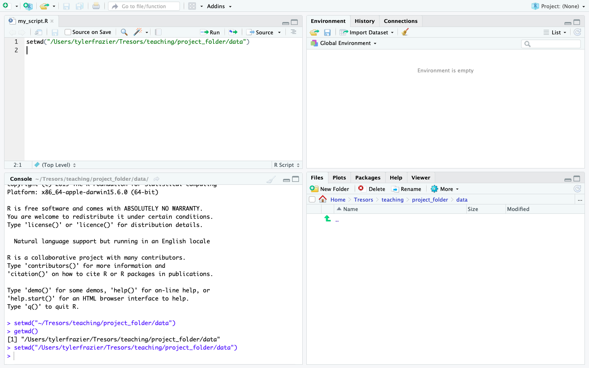
One noteworthy observation regarding the command setwd(), notice how the path to the working directory is specified within quotation marks. In general, whenever RStudio is communicating with your operating system (OS) or any entity outside of its workspace, what ever is being sent to that computer will be included within quotation marks. For example setwd("the/path/to_my/working/directory") is contained within quotation marks in order for RStudio to traverse the path as defined by your OS to that location on your computer.
description: >- In this exercise you will learn how to create vector and data frame objects, use the sample function and generate a plot that includes different types of squares, circles and lines.
Creating and Plotting Objects
Creating an object & creating a plot
Since you have already set your working directory in the previous step, now you can create your first object. Do so by writing the following command in your script.
x <- 1:10
There are essentially three parts to this command. First take note of the <- symbol, which is often called the assignment operator. The <- operator will function by assigning everything on its right hand side to the newly named object on the left. For example, if you entered the command t <- 1 and then typed t directly in the console and pressed return, R would inform you of the value of t, which would be 1. After creating and defining x do the same thing for y but this time start with the highest value and decrease sequentially to 1.
y <- 10:1
Now lets move to the console and ask R a few things directly. Sometimes we want to save our script, while at other times we just want to ask R a quick question. First lets ask R to list all the objects that exist in our workspace at this point in time. We use the ls() command to list all objects that exist in our workspace.
[1] "x" "y"
Let's also ask R to tell us more about the two objects we have created and placed in our workspace. Go ahead and type x and then y directly into your console and consider the output.
x
[1] 1 2 3 4 5 6 7 8 9 10
y
[1] 10 9 8 7 6 5 4 3 2 1
We can see that our earlier use of the colon in x <- 1:10 created an object named x that contains each whole number in sequence from 1 to 10, while y likewise did the same except in reverse. Also by simply typing the name of the object, R reveals to us everything it knows. Since we have two objects of equal length, lets plot x & y together.
plot(x,y)

We can continue to describe our plot by adding an argument to our command by specifying the plot type as a line and not simply points
plot(x, y, type = "l")
or alternatively a plot with both a line and points over that line.
plot(x, y, type = "o")

We can also add some description to our plot in order to better communicate our results. We can begin by adding a title, indicating the units of measurement while also adding labels for both the x and y axes.
plot(x, y, type = "o",
main = "The Path of a Running Boy",
sub = "units of distance = meters",
xlab = "longitude",
ylab = "latitude")
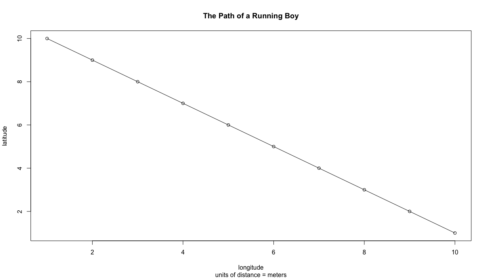
We can also change the linetype by specifying the lty = argument or set the lineweight by using the lwd = argument. The color of our line can be changed using the col = "some_color" argument, while the point symbol itself can be modified by using the pch = argument. Scale of the symbol is increased or descreased using cex =. Have a look at the Quick-R website for a comprehensive list of some available graphical parameters.
plot(x, y, type = "b", main = "The Path of a Running Boy",
sub = "units of distance = meters",
xlab = "longitude",
ylab = "latitude",
lty = 2,
lwd = .75,
col = "blue",
pch = 0,
cex = 1.5)

Creating a More Complicated Plot while also creating and then using a Data Frame
Now lets make your plot a bit more complicated than simply a line with points. First increase the scale of our plot area by increasing the range of values for both the x & y axes.
x <- 1:100
y <- 1:100
Now instead of using those values, let's randomly select from both x & y in order to produce a random series of x & y coordinates.
east <- sample(x, size = 10, replace = TRUE)
north <- sample(y, size = 10, replace = TRUE)
The above command sample() will randomly select in a uniform manner, one number from x and then also y, 10 times, creating the vector objects east & north. I have also included the replace = TRUE argument, such that each time a number is selected, it is returned and potentially can be selected again in the next draw. Now, lets take each value and use it as the coordinates for the center point of a number of squares. We will use the symbols() command in order to add additional specifications to our command.
symbols(east, north, squares = rep(.75,10), inches = FALSE)
Following is one possible outcome produced by the randomly produced coordinates. While the squares produced in your plot will be in different locations, the number of squares as well as the size of each, should be very similar. Lets also consider the additional arguments in the symbols() command. In the squares = argument within the command, I have also used the rep() function, which will repeat the length of each square, .75 in this case, 10 times, or 1 time for each square. I have also added the inches = FALSE argument so the units are considered to be similar to the axes.

Now lets add some circles to our plot. This time, instead of assigning an object a permanent value by randomly selecting from a series of numbers, lets randomly select values as part of creating the plot with the symbol() function.
symbols(sample(x, 10, replace = TRUE),
sample(y, 10, replace = TRUE),
circles = rep(.75,10),
inches = FALSE,
fg = "green",
add = TRUE)
Where as before I created two objects and plotted their values as x & y coordinates, this time I have nested the sample() command within the symbols() function, in the place where R is looking for the x & y value coordinates. In this manner, each time I execute the command, 10 circles will be randomly placed throughout the defined area, each with a radius of .75. I have also included the add = TRUE argument within the command, in order to add the circles to our previous plot of square. The fg = argument permits us to select a color for each circle.

Let's also add some larger trees and specify their color as well. Again we will randomly place them while using the add = TRUE argument so they are added to our previous plot. Also, consider a wider range of colors to use as the outline for each circle, while also filling each circle with a color. In order to determine how to fill the circle with a color, use the ? followed by the command you are interested in learning more about in order to view all of the available options. In this case you can type ?symbols directly in the console in order to see all of the arguments possible. If you scroll down in the help window, you will see that fg = is used to specify the color or your symbol border, while bg = is used to indicate the color for your symbol's fill. You may also be interested to know which colors are available to select. In order to review a list of all available colors, simply type colors() directly into your console. Running the following chunk of commands will then produce a plot similar to the following image.
symbols(east, north, squares = rep(.75,10), inches = FALSE)
symbols(sample(x, 10, replace = TRUE),
sample(y, 10, replace = TRUE),
circles = rep(.75,10),
inches = FALSE,
fg = "green1",
bg = "beige",
add = TRUE)
symbols(sample(x, 10, replace = TRUE),
sample(y, 10, replace = TRUE),
circles = rep(1.5,10),
inches = FALSE,
fg = "green4",
bg = "beige",
add = TRUE)

Thus far we have only created R objects that are of the vector class. We can review the class of one of the objects we have created by typing class(east) directly into the console and observe that R informs us that the object is a vector of integers. Now let's create a new class of an object called a data frame that contains a series of rows and columns where each row represents an observation while each column represents a different variable. We can start with the coordinates that represent the center point of each square.
dwellings <- cbind.data.frame(id = 1:10, east, north)
In this case, we are using the cbind.data.frame() command to column bind together the newly created variable named id with our two integer vectors east & north into a newly formed data frame named dwellings. After executing the above command, you can type the name of your data frame directly into the console to review its content. Within the environment pane in the top right hand window, under the data tab, you can also use your mouse to click on the data frame symbol that is off to the right of the dwellings data object.
| id | east | north | |
|---|---|---|---|
| 1 | 1 | 48 | 64 |
| 2 | 2 | 25 | 74 |
| 3 | 3 | 59 | 10 |
| 4 | 4 | 37 | 83 |
| 5 | 5 | 97 | 29 |
| 6 | 6 | 74 | 92 |
| 7 | 7 | 84 | 16 |
| 8 | 8 | 17 | 98 |
| 9 | 9 | 70 | 21 |
| 10 | 10 | 33 | 69 |
You'll notice that R also provides row numbers that in this case are identical to the identification number we have assigned to each square. Instead of assigning our id variable manually, we could have just as easily used id = row.numbers(dwellings) in order to achieve the same result, if the object dwellings already exists.
Now let's add a line that represents some type of transportation activity between each of the different dwelling units we have represented within our plot as squares. We can add lines to the plot with the lines() command. In order to identify the beginning and ending point of each line we set the x = argument to the east variable within the dwellings data frame. Likewise we set the the y = argument to the north variable also witin the dwellings data frame. One manner of informing R which variable is needed within a data frame is to use the $ operator. In general terms, the form to call a variable is my_data_frame$my_variable. Following is an example, which should produce something similar to the subsequent plot.
lines(x = dwellings$east,
y = dwellings$north,
lty = 2,
lwd = .75,
col = "blue")
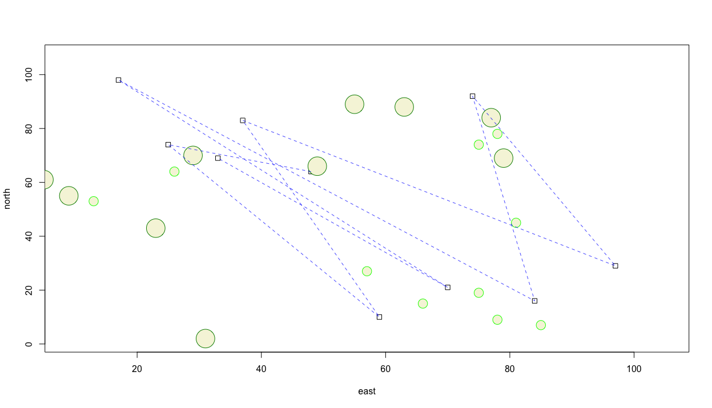
You'll notice that unlike the previous commands, it wasn't necessary to include add = TRUE in order to add the lines to the plot. Perhaps it would also be helpful to add some text to annotate each household. We can accomplish this using the text() command. As with lines(), we also do not need to use the add = TRUE argument. The text() function also requires identifying the location of the text you will use to annotate each dwelling unit. That is accomplished through using the labels = argument. Again, identify the variable where the id is located within the data frame using the my_data_frame$my_variable format.
text(x = dwellings$east,
y = dwellings$north,
labels = dwellings$id)
Since label coordinates are the same as the center point for each square, reading the labels is confounded. Instead of placing the label directly on top of the dwelling unit, add a few units north to the y = argument in order to displace each label a bit in the northerly direction.

Now perhaps instead of traversing a path between each house sequentially, our traveling person selected on 3 of the dwellings and moved between each of those buildings. First we will randomly select 3 numbers that will be used to identify the chosen homes. This time, set the replace = argument to FALSE since our traveling person will only visit each dwelling unit one time.
locs <- sample(1:10, 3, replace = FALSE)
Now instead of using the lines() command to identify the x = and y = coordinates of each dwelling unit's center point, we will select only 3 building locations. To do this, we wil lintroduce another method of traversing and selecting rows and/or columns from a data frame for use in an command and its arguments. The [ and ] symbols are extremely powerful operators and can be used to subscript from within a function or argument. Subscripting operators follow the format of first selecting the rows followed by a comma and then columns in this [row_numbers, column_numbers] format. If either the rows space or columns space is left blank, then R assumes ALL rows and/or columns should be selected. In the following command, I am using these subscripting operators to first select the 3 rows from the data frame that were randomly identified and then also include either column 2 for the easterly coordinate, or column 3 for the northerly coordinate.
lines(x = dwellings[locs, 2],
y = dwellings[locs, 3],
lty = 2,
lwd = .75,
col = "blue")
Alternatively I could have also specified x = dwellings[locs, ]$east and y = dwellings[locs, ]$north in order to achieve the same result. The following snippet demonstrates how that is accomplished while adding text in order to annotate each house with its id.
# text(x = dwellings$east,
# y = dwellings$north + 3,
# labels = dwellings$id)
text(x = dwellings[locs, ]$east,
y = dwellings[locs, ]$north + 3,
labels = dwellings[locs, ]$id)
You'll notice in the previous snippet of code that the # sign has been added to the first character space on lines 1, 2, & 3. Adding the # sign enables you to comment out that line of code so R will ignore it. In the above example, I have commented out the lines of code we produced earlier where we labeled all 10 houses, and followed it with out code that serves to label only the 3 units that were randomly selected. At this point our plot should appear similar to the following image.
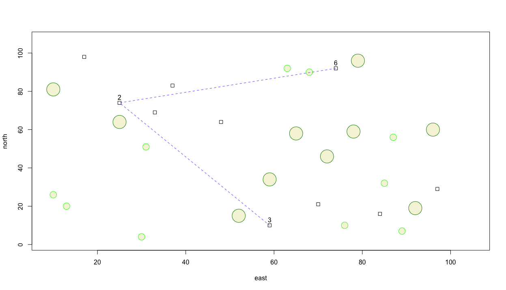
Now instead of using a straight line, let's use a spline to represent a more continuous path betweem each of the selected locations along the persons travel path. Comment out the previous lines() command and instead use the xspline() command to identify the path. I will set the shape = -1 in order to interpolate all points while crossing each dwelling unit.
xspline(x = dwellings[locs, 2],
y = dwellings[locs, 3],
shape = -1,
lty = 2)
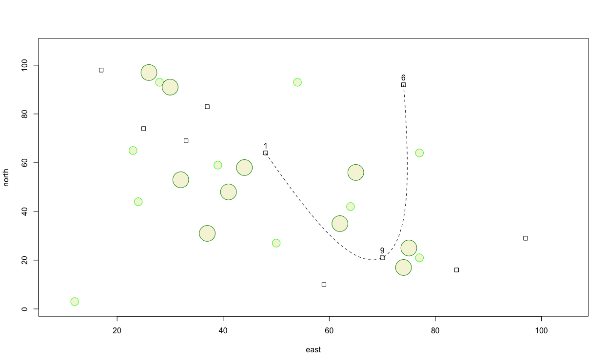
Finally, add a title to your plot using title(main="A Person's path between Homes").
Challenge Question
Create a similar plot as the one produced above, but instead meet the following specifications.
- Increase the minimum and maximum limits of your area from 1 to 1000 in both the
x&ydimension. - Randomly place 50 dwelling units throughout the 1000 x 1000 dimensioned area. Size each square appropriately.
- Randomly place 40 small circles (trees) throughout the 1000 x 1000 dimensioned area. Set the radius of each circle to the same or approximately the same as the width of each home.
- Randomly place 12 large trees throughout the defined area, such that each tree has almost twice the radius as each home's width.
- Randomly select 7 homes from the 50 total, and use a dashed spline to describe the path between each labeled dwelling unit.
- Title your plot.
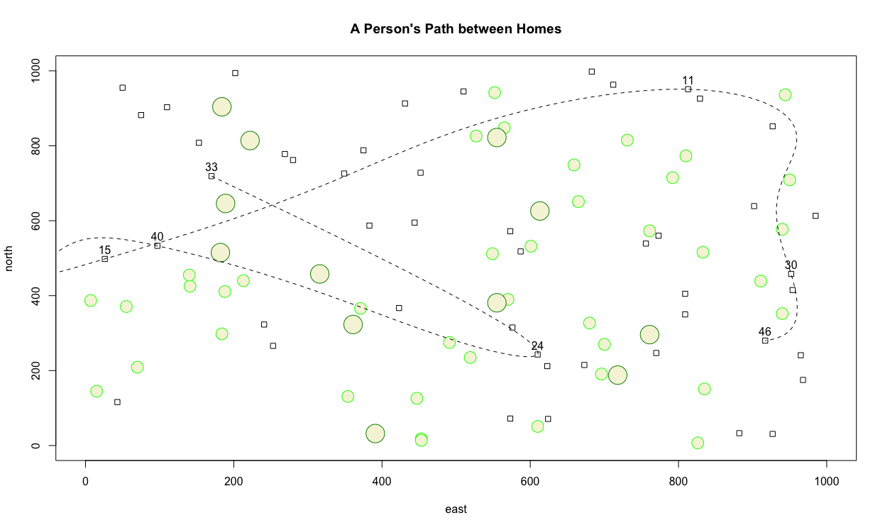
Local
Getting Started with Google Colab
Chapter 2
Describe
description: >- Locating and retrieving administrative subdivisions for your selected LMIC, as well as plotting boundaries and labelling each local government unit.
Projecting, Plotting and Labelling Administrative Subdivisions
We have had a bit of practice creating a theoretical environment, but now we will move to a more practical application. In this exercise you will learn how to install a package and load a library of functions into R, install spatial data as a simple feature and then use the grammar of graphics (aka ggplot::) to plot your geospatial data. To begin, install a package that will be used in order to describe and analyze our simple features.
install.packages("tidyverse", dependencies = TRUE)
In the above command we are installing a collection of packages designed for data science, where all packages share a common design. Once RStudio has informed you that the package has been installed, you may then execute the command that makes the library function available for use during your current work session.
library(tidyverse)
After executing the library command, R may inform you about the current version of attached packages while also identifying any conflicts that may exist. Conflicts between functions often exist when one package installs a function that has the same name as another function in another package. Generally, what happens, is the latest package to be installed will mask a same named function from a previously loaded library.
The tidyverse is not one library of functions, but is in fact a suite of packages where each one conforms to an underlying design philosphy, grammar and data structure. In the previous exercises we used commands from the base R package, but in this exercise we will begin to consider the more recent development of the tidyverse syntax nomenclature that emerged from the gramar of graphics (ggplot2). The tidyverse is arguably a more coherent, effective and powerful approach to data science programming in R.
After installing and loading the tidyverse suite of packages, let's install yet another important package that is used when working with spatial data.
install.packages("sf", dependencies = TRUE)
This will install the sf package, or simple features, which like the tidyverse is a recent, arguably more effective implementation of a design philosphopy for using spatial data in R. The sf:: package also has been designed to integrate with the tidyverse syntax. After installing sf::, then as before run the library() function to load the library of functions contained within the package for use in your current R worksession.
After running the install.packages() command successfully, you should add a # at the beginning of that line in order to comment it out. Running the install.package() command is generally necessary only once, in order to retrieve the package from a remote location and install it on your local machine, but it is necessary to run the library() command each time you open R and wish to access a function from within that library.
Another helpful command to add at the beginning of your script is rm(list=ls(all=TRUE)) , which will delete everything from your R workspace from the outset. By running this line of code first in your script, you will be working with what John Locke called a tabula rasa or a clean slate from the outset. After adding the remove all function as your first line of code but after installing your packages and loading those libraries, be sure to set your working directory. While it's fine to use the drop down menu to find the location of your working directory, the first time, it is a good idea to copy that line of code into your script, so the setwd() command can be executed programmatically instead of through the GUI (which will save you time). At this point your script should look like the following snippet of code.
rm(list=ls(all=TRUE))
# install.packages("tidyverse", dependencies = TRUE)
# install.packages("sf", dependencies = TRUE)
library(tidyverse)
library(sf)
setwd("the/path/to_my/working/directory")
The next step is to visit the GADM website, which is a repository of spatial data that is describing global administrative subdivisions or every country on earth. Select the data tab and become familiar with how the portal presents the administrative subdivision of each country. Find the country link towards the top of the page that forwards you to another page with a drop down tab for downloading GADM data.

As an example, I will select the West African country of Liberia. The result should present a number of different options for obtaining a spatial data that describes of Liberia's administrative boundaries. Administrative boundaries refer to the national border as well as all of the regional, district and local government subdivisions of that country.
Throughout the course of the semester we will use a number of different data sets that describe healthsites, settlements, roads, population, pregnancies, births, and a number of other local dimensions of human development. Some of the data made available through WorldPop or the Humanitarian Data Exchange will have been remotely sensed, usually from a satellite orbitting the earth. This remotely sensed data is then classified according to different discrete types or perhaps by assigning values or intervals of possible values. Other times the data available will have been obtained from a source in the field, and most typically from some institution or group located or working within that particular country. Surveys and census data are examples of secondary sources that were most often obtained from local institutions. Like remotely sensed data, secondary sources also serve to provide a description of existing conditions, while serving as the basis for further analysis, modeling, inference and potential simulations.
Typically, administrative boundaries and subdivisions have been obtained and provided by one of the regional offices within the United Nations Office for the Coordination of Humanitarian Affaris (OCHA). For example, the secondary sources of data that describe Liberia's political geography were likely provided by the Regional Office of West and Central Africa (ROWCA), presumably as they have obtained these sources from a ministry of government from within Liberia. Every country employs a unique nomenclature in order to describe its administrative subdivisions. Liberia is first subdivided into counties with each county further subdivided into districts. Each of Liberia's districts is then further subdivided into what are called clan areas.
Once you have found the the page for downloading Liberia's administrative subdivisions, note the different available spatial data types, as well as the different levels.

For our purposes, we want to obtain the national boundary (LBR_0), first level administrative subdivisions (LBR_1) and second level administrative subdivisions (LBR_2). Click on the Shapefile link in order to download a folder that contains a shapefile as well as a number of different corresponding files. After the folders have been downloaded, go to your working directory and create a new folder named data and then move the folders describing Liberia's administrative subdivisions to within that folder. The structure of your working directory should look something like the following (minus the additional folders).

You will also notice that there are a number of different files, each one with the same file name yet also having a unique file extension. The file extension is the three letter part of the file name that is to the right of the period, and acts somewhat as an acronym for the file type. For example, files that have the .shp file extension are called shapefiles. A shapefile contains the geometry of the points, lines and polygons used to spatially describe, in this example, the political geography of Liberia. A shapefile also requires most of the other files found in the folder in order for it to function properly. For example, the .prj file provides the projection that is used when plotting the geometry. The .dbf file provides the attributes associated with each spatial unit (for example the name associated with each county or district). Other files also provide information that enables RStudio to further interpret the spatial information in order to better serve our purposes.
In order to import a shapefile into RStudio we are going to use a command from the sf:: package (simple features). RStudio will need to find each of the .shp files in order to import the international border, the first level administrative subdivisions and the second level administrative subdivisions. If I have set my working directory to the data folder, then RStudio will need to traverse through the subfolder in order to locate the correct .shp files. You also will need to use the read_sf() command to import the .shp file into RStudio and create a simple feature class object.
lbr_int <- add_command_here("add_folder_here/add_file_name_here.shp")
Once you have successfully executed the above function using the sf::read_sf() command, you should observe a new object named lbr_intappearing in the top right data pane within your RStudio environment. To the right of your newly created object there is a small gridded box that you will be able to click on in order to view individual attributes associated with this simple feature class spatial object. You will also notice that within the data pane, RStudio also provides you with some basic information about the object, in this case 1 observation that has 7 variables.
The sf:: package also includes a function called st_geometry() that will enable you to view some of the basic geometry associated with the object you have named lbr_int. Type the name of your object within the st_geometry() command so that RStudio will return some basic geometric information about our spatial object that describes Liberia's international border. You don't necessarily need to write this command in your script, you can just enter it directly into the console

After using the st_geometry() command with our lbr_int object, RStudio provides us with a basic description that includes the geometry type (polygons in this case, but it could also return points or lines), the x & y minimum and maximum values or also know as the bounnding box (bbox), the epsg spatial reference identifier (a number used to identify the projection) and finally the projection string , which provides additional information about the projection used.
Now that we have conducted a cursory investigation of our simple feature object geometry, let's plot our simple features class object that describes the international border of Liberia. To plot, we will use a series of functions from a package called ggplot(). The gg in the package name ggplot:: stands for the grammar of graphics, and is a very useful package for plotting all sorts of data, including spatial data classes created with the sf:: package. To start add ggplot() + to your script and then on the following line add the geom_sf(data = your_sf_obj) in order to specify the data that ggplot() should use in producing its output.
ggplot() +
geom_sf(data = your_sf_obj)
Following the data = argument, you can also specifiy the line weight for the border using the size = argument. It is also possible to specify the color = as well as the opacity / transparency of your polygon using the alpha = argument. With the following script I have set the international border line weight width to 1.5 , the color of the border to "gold" , the fill color for the internal portion of the polygon to "green" and the alpha = value to .5 or 50% transparent.

It would also be helpful to have a label describing our plot. In order to do this we can use either the geom_sf_text() command or the geom_sf_label() command. In the following snippet of code you will notice that I have added the aesthetics argument within my geom_sf_text() command. The aes = argument enables us to specify which variable contains the label we will place on our object. If you click on the blue arrow to the left of the lbr_int object in the top right data pane, the object will expand below to reveal the names of all variables. The second variable is named NAME_0 and provides us with the name we will use as our label, Liberia. Following the aes() argument, you can also specify the size = of your label as well as its color =.
ggplot() +
geom_sf(data = your_sf_obj,
size = value,
color = "color",
fill = "color",
alpha = value_between_0_&_1) +
geom_sf_text(data = your_sf_obj,
aes(label = variable_name),
size = value,
color = "color")

Good job! You have successfully used ggplot from the tidyverse with the simple features package in order to properly project and plot Liberia's international border, as well as to include a label. Now continue with the first level of administrative subdivisions, Liberia's fifteen counties. In order to do this, return to your use of the read_sf() command in order to import and create an object named lbr_adm1.
lbr_adm1 <- add_command_here("add_folder_here/add_file_name_here.shp")
As before you could use the data pane in the top right corner to expand your view of the lbr_adm1 file you created. You can also click on the small grid symbol to the right of your data object (within the data pane) in order to view your data in a new tab in the same pane where your script is located. Whereas before we had a simple feature class object with 1 observation with 7 variables, your lbr_adm1 simple feature object has 15 observations, with each observation having 8 different variables describing some attribute associated with each individual polygon. Let's plot both Liberia's international border as well as its 15 counties.
To do this, follow the same approach you used with the lbr_int object but replace it with the name of your adm1 spatial object, lbr_adm1. Also follow the same approach you used for adding the labels in your previous snippet of code, but this time specify the variable with the county names from lbr_adm1.
ggplot() +
geom_sf(data = your_adm1_sf_obj,
size = value,
color = "color",
fill = "color",
alpha = value) +
geom_sf(data = your_int_sf_obj,
size = value,
color = "color",
fill = "color",
alpha = value) +
geom_sf_text(data = your_adm1_sf_obj,
aes(label = variable_name),
size = value,
color = "color") +
geom_sf_label(data = your_int_sf_obj,
aes(label = variable_name),
size = value,
color = "color")
The code above will produce the plot below when thegeom_sf() function using the lbr_adm1 arguments is specified with a line weight size = 0.65, line weight color = "gray50", a polygon fill = "gold3" and a 65% opacity value of alpha = 0.65. Additionally, I have set the size = 2.0 , and the alpha = 0 (100% transparent) for the data = lbr_int object. The geom_sf() command will default to a color = "black" if the line color is not specified. Additionally, since the alpha = 0 no fill = "color" is needed (since it will not appear). The county labels have a size = 2 (and also defaults to a color = "black", while the geom_sf_text() command to label Liberia has a size = 12 argument. In order to nudge the label to the east and south I have also added the nudge_x = 0.3 and nudge_y = -.1 arguments to the geom_sf_label() command.

After adding the counties go back and add the second level of administrative subdivisions, or districts. Again use read_sf() to import that shapefile as a simple feature object into your RStudio workspace. Use the geom_sf_text() command to add the labels, while also making sure to specify the correct variable name in the aes(label = variable_name) argument. Size the district borders and labels so they are smaller than the internation border as well as the county delineations.
rm(list=ls(all=TRUE))
# install.packages("tidyverse", dependencies = TRUE)
# install.packages("sf", dependencies = TRUE)
library(tidyverse)
library(sf)
setwd("~/Tresors/teaching/project_folder/data")
lbr_int <- add_command_here("add_folder_here/add_file_name_here.shp")
lbr_adm1 <- add_command_here("add_folder_here/add_file_name_here.shp")
lbr_adm2 <- add_command_here("add_folder_here/add_file_name_here.shp")
ggplot() +
geom_sf(data = adm2_object,
size = value,
color = "color",
fill = "color",
alpha = value) +
geom_sf(data = adm1_object,
size = value,
color = "gray50",
alpha = value) +
geom_sf(data = int_object,
size = value,
alpha = value) +
geom_sf_text(data = adm2_object,
aes(label = variable_name),
size = value) +
geom_sf_text(data = adm1_object,
aes(label = variable_name),
size = value)
ggsave("liberia.png")
Use ggsave(file_name.png) to save your plot as a .png file, to your working directory.

Team Challenge Question
Follow the steps from above that you used to produce your plot of Liberia, but instead each team member should select their own LMIC country and produce the output for it. Refer this World Bank guide for a list of low, middle and high income economies. Go back to the GADM website and find the administrative boundaries for the LMIC country you have selected. Plot and label the international border, the first level of administrative subdivisions and the second level of administrative subdivisions. Make sure you designate heavier line widths for the higher level administrative subdivisions and thinner line widths for the more local governments. You may also use darker and lighter colors to discern hierarchy. Please be sure to use different label sizes and/or colors to further differentiate administrative hierarchies. Modifying annotation transparency also as needed.
Meet with your group and prepare to present the best two plots for the Friday informal group presentation. Then as a group, upload all 5 team members plots to #data100_project1 (informal group presentations) by Sunday night.
Individual Stretch Goal 1
Go to the HDX website, find and download the shapefiles for your selected country. Compare their administrative subdivisions to those obtained from GADM. Are they the same? Are there any differences? Which source do you think more closely describes the local political reality within your selected LMIC? Do the HDX shapefiles work?
Alternatively, do the same using the geoBoundaries website, which is housed right here at William & Mary! When comparing GADM, HDX and geoBoundaries, be sure to identify the source of the data you are presenting. Are these administrative boundaries primary or secondary sources? Are you able to identify who produced the data? How did each repository obtain the data they are sharing with you?
Individual Stretch Goal 2
Create a new ggplot() + as you did before. This time filter your lbr_adm1 object by using the %>% (pipe) operator and using the assignment operator to create a new sf object that includes only the county named Montserrado. Inside the filter() command you will need to specify the admin1name = "Montserrado". Then continue to use the %>% operator with your lbr_adm2 object again filtering based on the admin1Name == "Montserrado" . Follow that %>% with your ggplot(), geom_sf() and geom_sf_text() commands to plot the geometries and labels for both the first and second level administrative subdivisions of Montserrado, Liberia.
new_sf_obj <- lbr_adm1 %>%
filter(variable == "outcome")
lbr_adm2 %>%
filter(variable == "outcome") %>%
ggplot() +
geom_sf(size = value) +
geom_sf_text(aes(label = variable),
size = value) +
geom_sf(data = newly_created_sf_obj,
size = value,
alpha = value) +
geom_sf_text(data = newly_created_sf_obj,
aes(label = variable),
size = value) +
xlab("longitude") + ylab("latitude") +
ggtitle("Montserrado County", subtitle = "Liberia's most populous county and its subdivisions") +
theme(plot.title = element_text(hjust = 0.5),
plot.subtitle = element_text(hjust = 0.5))
ggsave("montserrado.png")

Now identify the most populous urban area within your LMIC and use ggplot() + to plot the first and second level administrative subdivisions where it is located.
Individual Stretch Goal 3
Produce detailed maps of your more densely populated areas and include them in your final product. Use the geom_rect() + command to identify the area of increased scale. Also use the annotation_custom() + command to arrange each plot within a larger graphical layout. The following is a fully working example for Liberia. Translate the script to your LMIC. You may need to install and load the package ggsflabel.
### Create Larger Map of Liberia with Rectangles identifying area of Detailed Maps
plot1 <- ggplot() +
geom_sf(data = lbr_adm1,
size = 0.5,
color = "gray50",
fill = "gold3",
alpha = 0.5) +
geom_sf(data = lbr_int,
size = 2.0,
alpha = 0) +
geom_rect(data = lbr_adm1, xmin = -10.95, xmax = -10.3, ymin = 6.2, ymax = 6.9,
fill = NA, colour = "green", size = 2) +
geom_rect(data = lbr_adm1, xmin = -8.80, xmax = -7.35, ymin = 4.3, ymax = 5.65,
fill = NA, colour = "blue", size = 2) +
geom_sf_text(data = lbr_adm1,
aes(label = admin1name),
size = 3) +
geom_sf_text(data = lbr_adm1,
aes(x = -10.60, y = 6.05, label = "Detail A"),
size = 5,
color = "green") +
geom_sf_text(data = lbr_adm1,
aes(x = -9.10, y = 4.6, label = "Detail B"),
size = 5,
color = "blue") +
xlab("longitude") + ylab("latitude") +
ggtitle("Liberia", subtitle = "Details A & B") +
theme(plot.title = element_text(hjust = 0.5), plot.subtitle = element_text(hjust = 0.5),
panel.background = element_rect(fill = "azure"),
panel.border = element_rect(fill = NA))
### Create Detail A Map
mont_cnty <- lbr_adm1 %>%
filter(admin1name == "Montserrado")
plot2 <- lbr_adm2 %>%
filter(admin1Name == "Montserrado") %>%
ggplot() +
geom_sf(size = .15) +
geom_sf_text(aes(label = admin2Name),
size = 1.75) +
geom_sf(data = mont_cnty,
size = .5,
alpha = 0) +
geom_sf_text(data = mont_cnty,
aes(label = admin1name),
size = 3.75,
alpha = .5) +
xlab("longitude") + ylab("latitude") +
ggtitle("Detail A", subtitle = "Montserrado County") +
theme(plot.title = element_text(hjust = 0.5), plot.subtitle = element_text(hjust = 0.5),
panel.background = element_rect(fill = "azure"),
panel.border = element_rect(fill = NA))
### Create Detail B Map
east_cnties <- lbr_adm1 %>%
filter(admin1name == "Grand Kru" | admin1name == "Maryland" | admin1name == "River Gee")
plot3 <- lbr_adm2 %>%
filter(admin1Name == "Grand Kru" | admin1Name == "Maryland" | admin1Name == "River Gee") %>%
ggplot() +
geom_sf(size = .15) +
geom_sf_text(aes(label = admin2Name),
size = 1.75) +
geom_sf(data = east_cnties,
size = .5,
alpha = 0) +
geom_sf_text(data = east_cnties,
aes(label = admin1name),
size = 3.75,
alpha = .5) +
xlab("longitude") + ylab("latitude") +
ggtitle("Detail B", subtitle = "River Gee, Grand Kru & Maryland Counties") +
theme(plot.title = element_text(hjust = 0.5), plot.subtitle = element_text(hjust = 0.5),
panel.background = element_rect(fill = "azure"),
panel.border = element_rect(fill = NA))
ggplot() +
coord_equal(xlim = c(0, 6.0), ylim = c(0, 4), expand = FALSE) +
annotation_custom(ggplotGrob(plot1), xmin = 0.0, xmax = 4.0, ymin = 0,
ymax = 4.0) +
annotation_custom(ggplotGrob(plot3), xmin = 4.0, xmax = 6.0, ymin = 0,
ymax = 2.0) +
annotation_custom(ggplotGrob(plot2), xmin = 4.0, xmax = 6.0, ymin = 2.0,
ymax = 4.0) +
theme_void()
ggsave("details.png")

Extracting Populations from a Raster and Aggregating to each Unit
Now that you have selected your LMIC and produced a basic geospatial description of that country at both the adm1 and adm2 levels of government, you are now set to join some data to each of those units and begin conducting a basic descriptive analysis. Start by going back to the WorldPop website, click on the population tab under the data pull down menu, search individual countries and type the name of your selected LMIC. Click on the 2019 data and resources tab for your country and then select the download button in order to obtain the spatial distribution of population for your selected LMIC. For Liberia the downloaded file is named lbr_ppp_2019.tif. Move the file to the data folder within your working directory.

You may need to right click or two finger click and choose the download linked file option in order to initiate the process of downloading the .tif file into your downloads folder. Sometimes your web browser may be set to try and display the image file directly within the browser itself. You should still be able to save the file directly to your downloads folder by right clicking on it and saving it.
After you have succesfully downloaded the file, go to your project folder that you previously used as your working directory and create a new folder within the /data folder that will be dedicated to raw data from worldpop. I have made a subdirectory within my data folder named world_pop to further categorize and organize my source data.

Once you have your .tif file located within a subdirectory of the data folder, you can go ahead and open up RStudio. Create a new, R Script file, and save it in your scripts folder. Add the rm(list=ls(all=TRUE)) at the beginning of your code and then load the tidyverse and sf libraries. Following your libraries, be sure to set your working directory.
rm(list=ls(all=TRUE))
# install.packages("tidyverse", dependencies = TRUE)
# install.packages("sf", dependencies = TRUE)
library(tidyverse)
library(sf)
setwd("~/path/to_my/working/directory/")
For this exercise, we will install a new package and then load its library of functions. Use the install.packages() to install the raster:: package. Be sure to set the dependencies = TRUE argument within your command. After you have successfully installed the raster:: package, use the library() function to load raster:: and make its set of commands available as part of your current RStudio work session.
The first command we will use from the raster:: package shares the same name as the library itself. We use the raster() function to import our .tif file from its location within our data subdirectory to the current RStudio work session. Keep in mind, if you set your working directory to the /data folder, but then also created a subfolder named /world_pop you will need to include the subdirectory path, as well as the full name of the .tif within the raster() command.
myLMIC_raster_pop19 <- add_command_here("add_folder_name_here/add_file_name_here.tif")
Once you have created your new raster object, by using the raster() function, you should notice a new Formal class RasterLayer data object appear in the top right data pane. In order to find out some basic information about my newly created raster object, I will type the name of my object directly into the console.

The name of my raster class object is lbr_pop19 and by typing the objects name directly into the console, R informs me of the class of the object, dimensions, resolution, extent, coordinate reference system as well as the minimum and maximum values. The information about the objects dimensions can be useful, since it is informing us of how many rows of gridcells by how many columns of gridcells are contained within the object. In the case of the WorldPop raster layer describing Liberia's population in 2019, the object contains 24,922,800 gridcells of equal size, each one with a value describing how many people live in that location. Resolution informs us of the size of each grid cell, which in this case is defined in terms of decimal degress. We can also, obtain additional information about the projection of the raster layer from the crs row, which is in longitude and latitude (decimal degrees) while using the WGS84 datum. We will want to confirm that our shapefiles also are using the WGS84 datum in their projection.
You'll want to note the number of gridcells that your raster layer contains. If your country contains too many gridcells the computational expense required to execute calculations may be too time intensive. As noted above, Liberia has about 25 million gridcells, while quite large, most modern desktop and laptop computers should be able to handle this data within a reasonable amount of time. Comparatively, Ghana has about 41 million, Syria has about 48 million while Cuba has about 53 million total gridcells. While a bit larger in size than Liberia as well as the computational power that will be demanded in order to execute calculations over those raster files, countries of this approximate size (40 to 50 million gridcells) should also be manageable. Raster files containing more than 50 million gridcells will begin to become exorbitantly more time intensive. For example, South Sudan with 140 million, Madagascar with 143 million, Morocco with 144 million, or Vietnam with 156 million gridcells per raster will all likely be computationally very expensive in terms of the time it will take to execute commands using the raster files.
If your country has a very large number of gridcells within the population raster, there are two recommendations for how to proceed. First you are welcome to reselect your LMIC by choosing one that is smaller in terms of area and number of gridcells. Second, you are also welcome to select a subdivision of your LMIC and then subset your country to include only that administrative area. A good example of how to subset your LMIC to include one or more of its subdivisions was provided in project 1, part 1, individual stretch goal 2 (lines 1 & 2 of the code). If you want to subset a larger country and raster, please ask me, and I'll share some example code with you.
As we did in the previous exercise, we will again import our shapefiles using the read_sf() command from the sf:: library of functions. Let's start out by importing the adm1 shapefile for your selected LMIC.
myLMIC_sf_adm1 <- add_command_here("add_folder_here/add_file_name_here.shp")
In a manner similar to how we retrieved a basic description of our raster file, we can simply type the name of our simple features class object into the console.

R informs us that our simple feature collection has 15 features, each one with 7 fields (or variables). R also provides us with the bounding box for our collection of polygons in terms of the minimum and maximum longitude and latitude values. Additionally, we are able to confirm that the source shapefile used to important our sf object also used the WGS84 datum for projection.
You also may notice that below the proj4string row, R describes the object as a tibble: 15 x 8. A tibble is a new object class for data that is commonly used with the tidyverse syntax. Tidyverse syntax is sometimes referred to as tidyR and is different from the baseR syntax. While tidyR is fully capable of calling variables from data frames using either the $ operator or the [ ] subscripting operators, it is a more advanced design in its approach to data that can include multiple dimensions, and thus %>% pipe operators can be very effective. For now, all you need to know is that a tibble is a kind of data object, and tidyR is a new kind of data science syntax for R.
Since both our raster and sf objects are similarly projected, we should be able to plot both and confirm they have the same bounaries. Start by plotting the raster object. Follow that on the next line, by also plotting your sf object. You will want to nest the name of your sf object within the st_geometry() command in order to plot just the geometry for all 15 polygon features. Finally, also include the add = TRUE argument to the command, in order to add the ploygon features to the already plotted raster layer.
plot(your_raster_object)
plot(st_geometry(your_adm1_sf_obj), add = TRUE)

We can see that we now have a scale on the right hand side of the plot that is using a color scale to coorespond with all continuous values between a minimum and maximum (from about 0 to a little more than 112). We can also begin to identify the locations throughout Liberia where people have settled. Clearly there is a large clump of green and yellow gridcells located along the southern coast (this is the location of Liberia's capital city Monrovia). As we move away from the centrally populated coastal urban area, inland to the north-east we also notice some less densely populated areas along the outskirts of Monrovia, which have pinkish colored gridcells. There are also a few, less populated urban areas further to the south as well as along the northern border with Guinea. In fact, if we looked at all 24,922,800 gridcells that indivually comprise this map, each one would have a value and cooresponding color that indicates its population.
We can confirm that our raster and sf objects have almost coterminous boundaries (not exactly, but fairly close). Now we will use a function from the raster:: package that will evaluate each gridcell according to its location, which will be one of the 15 counties. Since we have 24,922,800 gridcells to evaluate in accordance with one of 15 different locations, we can imagine this could very well be a computationally expensive task. Before executing your extract command, it is a good idea to close all applications and processes that you may have running on your desktop or laptop. It is also a good idea to connect your computer to a power supply cable that is plugged into a 110V wall jack. Restarting your computer from a cold boot and confirming that no superfluous processes automatically begin during start-up, will also help to maximize your potential computational power for RStudio.
In order to optimize the efficiency of your computer, we are also going to do something called parallel processing by sending streams of data to available cores found in the central processing unit of your computer. To do this, we will need to add two new packages in your script. Go back to the top of your script and add a line of code beneath the other lines where you executed the install.packages() command. This time, install two new packages, doParallel:: and snow::. Add the dependencies = TRUE argument to inform RStudio to include any other packages that doParallel::and snow:: may depend upon in order to properly function. After you have sucessfully installed both packages (always observe their installation and watch to see if any errors pop up), then use the library() command in order to load each packages' associated library of functions. Don't forget to comment off the install.packages() lines of code after they have finished.
Once you have successfully made both of these new packages available, move back to after the last lines of code you wrote, where you plotted your raster layer with the sf layer on top. First, check to see how many cores are available on your computer. To do this use, enter the detectCores() command directly into the console. When running parallel processes on your computer, you should always save at least one core for system operations, thus we will create an object that is equal to the number of cores on your computer - 1.
In the next steps that follow, do not execute any of the following four lines of code until you have first properly specified them in your script (I'll indicate when to run them further below). Start by creating an object that designates the number of cores you will use once you begun parallel processing. Follow the creation of your ncores object with the beginCluster() command, which will inform RStudio to start parallel processing.
ncores <- detectCores() - 1
beginCluster(ncores)
Once parallel processing has been engaged, we will add the command from the raster:: package that will evaluate all of the gridcells and assign a number to each one that cooresponds to its location as being within one of the 15 counties. This command is called extract(). The extract() command will need two objects, the first will be our raster layer object while the second will be our simple features class object. In addition to adding the extract() command itself to the script, I will also further specify the raster:: library in the command to make certain, RStudio doesn't attempt to execute a different extract() command from another library. Do not run this command yet, just write it in your script after beginCluster().
pop_vals_adm1 <- raster::extract(your_raster_obj, your_sf_obj, df = TRUE)
Also add the df = TRUE argument at the end of the command to create the new object as a data frame. Following the extract() command, add the endCluster() command, to inform RStudio that you will no longer need to use additional cores for parallel processing. This snippet of code should appear as follows. Select all four lines and run them at the same time.
ncores <- detectCores() - 1
beginCluster(ncores)
pop_vals_adm1 <- raster::extract(lbr_pop19, lbr_adm1, df = TRUE)
endCluster()
Depending on your computer, the size of the raster file as well as the size of your sf file, running the above 4 lines of code could take a few minutes. You will want to be patient and wait for the extract() command to complete its evaluation of every grid cell. If you would like to monitor the progress of your comptuer you could go to the activity monitor on a Mac or the task manager on a Windows machine.

For example on this particular Mac, you will see that 7 processes have been allocated to R in order to evaluate the location of all ~25 million gridcells. You will also notice the CPU load has increased considerable, to almost 90% in the above case. With 7 i7 cores, it took about 1 minute and 10 seconds to extract the values of all 4 million persons distributed across the 25 million gridcells throughout Liberia. Your case could be faster or slower depending on the size of the data, the speed of your machine, and how much computational power you have reserved for the given task.
After your raster::extract() has finished, you should have a new data frame object in your top right data pane that is populated with probably hundreds of thousands if not millions of rows (observations), and two columns (variables). Each row will have a number between 1 and 15 in the above case (each number cooresonding to each of Liberia's counties) and then a following column that provides the WorldPop estimate for how many people occupy each individual gridcell. You may notice that all of the observational values have fractions and even quite a large number are likely to be a fraction less than 1. While not an ideal outcome, these fractions are a result of the current methodology and essentially is still state of the art for dasymmetric population distribution. In the future, I expect new methodologies will discretize intervals and over come this "zero cell problem" by some means other than adding these small values across the entire space that essentially amount to "noise."
Since this newly created data frame is quite large, and it would be better if you didn't have to run the extract() command everytime you opened and ran this script, it is a good idea to go ahead and save the data frame as a .RData file. You can save data using the save() command, and then you can also later load data using the load() command. Once you have executed the save() command, you can then comment it off, thus only needing to load() the data.
# ncores <- detectCores() - 1
# beginCluster(ncores)
# pop_vals_adm1 <- raster::extract(lbr_pop19, lbr_adm1, df = TRUE)
# endCluster()
# save(pop_vals_adm1, file = "pop_vals_adm1.RData")
load("pop_vals_adm1.RData")
We have assigned a cooresponding ID for each gridcell according to its county, and now we will sum the totals all gridcells by ID. Start with the data frame that you created with your extract() command. For my Liberia example, I have called the data frame object pop_vals_adm1. Follolw your object with the %>% pipe operator. You will use the group_by() command in order to group all of the observations within our data frame according to its ID. Follow the group_by() command again with another %>% pipe operator. Now specify that you will group each row according to its ID and also summarize all of the rows with the same ID according to the lbr_ppp_2019 variable, which contains the estimate of how many persons live within each gridcell. Finally, be sure to add the na.rm = TRUE argument to your command, which will remove from the calculation all grid cells that do not have a value (generally designated in R as NA).
totals_adm1 <- pop_vals_adm1 %>%
group_by(add_ID_variable_here) %>%
summarize(name_of_newly_created_var = sum(add_pop_var_here, na.rm = TRUE))
Grouping the data frame we produced with the extract() function, by ID while also summing together all gridcell values that share that same ID will produce the following estimated population totals for every county in Liberia.

Review the sum totals to see if they are realistic. Execute the equivalent of sum(totals_adm1$pop19) directly in the console, and consider the total returned. In the above example, R returns a total of 4,288,144 total persons living in 15 different counties across Liberia during the year 2019. What does R return for your LMIC? Is the sum total realistic? Research the population of your LMIC in 2019 and confirm your returned value is realistic.
Now that we have the total population for each county, we need to add it to our sf class object so that we can spatially describe the population of our LMIC. You can do this with the %>% pipe operator and the add_column() command. In the argument of the add_column() command first specify the name of the column you will be creating in your sf adm1 object and then set that = to the name of the data frame and variable where those population totals exist. In our example case pop19 = totals_adm1$pop19. Also notice how I simply write over my existing sf object by assigning the newly created object the exact same name lbr_adm1 <- lbr_adm1 %>%.
myLMIC_adm1 <- myLMIC_adm1 %>%
add_column(pop19 = totals_adm1$name_of_newly_created_var)
After running the above code, look in the data pane in the top right corner of RStudio and find your modified adm1 simple features object. Click on the small grid off to the right of the object to view the data in the top left pane (scripts pane). Scroll all the way to the right in the data, and you should notice a new column named pop19 that has the population counts for every adm1 subdivision in your country.
Now that we have totals for each county, it is finally time to plot our results. Since we are only going to call one object in the first example, we can start our ggplot() command by automatically specifying the object we will be using in our plot. Within the geom_sf() command, use the aes(fill = ) argument to identify the variable that will be used to spatially describe the continuous values of population totals for each of Liberia's counties. Also add the scale_fill_gradient() command with the low = and high = arguments to desginate a color that will coorespond to the low and high ends of the value range. A heatmap typically sets the color yellow to coorespond with the minimum value and red as the maximum value.
ggplot(myLMIC_adm1) +
geom_sf(aes(fill = pop19)) +
geom_sf_text(aes(label = admin1name),
color = "color",
size = size) +
scale_fill_gradient(low = "color", high = "color")
ggsave("lbr_pop19.png")

Team Challenge Question
Follow the steps from above that you used to produce your plot of Liberia, but instead each team member should use their own selected LMIC country. Go back to the HDX website and find the population totals for the LMIC country you have selected.
Meet with your group and prepare to present the two best plots for the Friday informal group presentation. Then as a group, upload all 5 team members plots to #data100_igps (informal group presentations) by Sunday night.
Individual Stretch Goal 1
Go back and replicate the step by step instructions from above, but instead of extracting and plotting the values for your LMIC's adm1 subdivisions, do it for adm2. Set the fill = argument by making it equal to the log transformation of your population variable log(variable_name).

Individual Stretch Goal 2
Take your spatial description of population at the district level from above and add the adm1 boundaries, such that you can determine where each district is located. Be sure to add the data = argument where you specify both your adm1 and adm2 sf class object for each geom_sf() function within the ggplot() object you are creating. Set the size = argument for the adm1 object as much smaller than the lines width for the adm2 (in my plot below they are .1 and .65 respectively. Also be sure to set the alpha = 0 for the adm1 object, in order to be able to see the districts.
Again, include the data = argument when using the geom_sf_text() command in order to add the labels for both the districts and counties. District labels can be relatively small, perhaps size = 1.0 while they should be considerable larger for the county labels, possibly along the order of size = 2.5. In your geom_sf_text() argument for the county lables, set the alpha = .35, such that the labels are transparent enough to interpret whats beneath them, while still discenable enough to read.
Change your scale_fill_gradient() command to scale_fill_gradient2() in order to add a third color and midpoint to the colors mapped to each contiuous value. Look at the value from the previous scale. What is the midpoint?
scale_fill_gradient2(low = "blue", mid="yellow", high="red", midpoint = add_value_here)
Add other descriptive elements to your plot, such as labels for axes, title and panel background.

Individual Stretch Goal 3
Install the package rayshader:: from Tyler Morgan Wall's github repository.
remotes::install_github("tylermorganwall/rayshader", dependencies = TRUE)
Once it has been installed (it might take a few minutes), use the library(rayshader) command to load the library of functions. Create a simple ggplot() of adm2 values without any annotations or other descriptive details. Keep either the scale_fill_gradient() or scale_fill_gradient2() . Notice how assign my ggplot() object to a new object named gglbr_adm2. I used the following code for Liberia.
gglbr_adm2 <- ggplot(lbr_adm2) +
geom_sf(aes(fill = log(pop19))) +
scale_fill_gradient2(low = "blue", mid="yellow", high="red", midpoint = 11.0)
Finally, create a three dimension plot of all log of density population values by district. Notice the name of the ggplot object I created above is the same object used in the plot_gg() command from the rayshader:: package.
plot_gg(gglbr_adm2, multicore = TRUE, width = 6 ,height=2.7, fov = 70)

Creating a Geometric Bar Plot with your Simple Feature object
In the previous exercise, you extracted population data from a raster, and then aggregated these totals to the first level administrative area of your selected LMIC. You then added this new column describing the population of each first level administrative subdivision to your simple feature object. Now we are going to use that newly created column as the basis for generating a geometric bar plot of population, share of population and density by first level adminsitrative subdivision.
Rerun the code you used to create your adm1 sf class object in R, including the newly added population column. Click on the View() grid symbol to the right of the data object in the top right, RStudio pane under the environment tab. When the data viewer appears in the top left pane (beside your script tab), it should look something like the following.

Confirm that your sf object has the name of each first level administrative subdivision as well as the population data you calculated and introduced. Then use the save() command to save your sf object to your working directory.
save(your_adm1_obj, file = "name_of_the_file_you_save.RData")
Once you have run the save() command you should be able to find your newly created .RData file in your working directory. Please keep in mind that this .RData file will be different from the one you previously saved that contained the results from your extract() , therefor be certain to name it differntly, or else you may write over your previous saved .RData file, and effectively erasing it. Save the .RData file containing your sf class object. Create and name a new script in RStudio, while saving it to your working directory.
As you have done with your prior scripts, start with the rm() command to clean the workspace, followed with install.packages() which are normally all commented off with the # at the beginning of each line and then the library() command, in order to load your needed libraries of commands.
rm(list=ls(all=TRUE))
# install.packages("tidyverse", dependencies = TRUE)
# install.packages("sf", dependencies = TRUE)
library(tidyverse)
library(sf)
setwd("~/your/working/directory/for_data")
Open the tidyverse:: and sf:: libraries and set your working directory. Use the load() command to import the sf object contained within your .RData file into your workspace.
load("name_of_the_file_you_saved.RData")
After you have executed the above command, you should notice your adm1 sf object reappear in the top right pane under the environment tab. Confirm the newly created pop19 variable is present in your sf class object by using the View() command or data viewer.
Add two new columns to your adm1 object. First will be a column that provides us with the area of each first level administrative subdivision unit in square kilometers, while the second column will describe density of your LMIC. In order to add these two columns, we will use the %>% operator followed by the mutate() function. The mutate() command is part of the tidyverse syntax and is used to create a new variable which is calculated from data found in another variable. As part of the argument within the mutate() command, you will give the new column that you are creating a name.
Start with the name of your adm1 object followed by the pipe operator, which you will assign to the same named adm1 object, thus writing over and replacing it with the newly incorporated and created columns. The first newly created column will be named area. In order to calculate this newly created column, we will also use a new command from the sf library of functions called st_area().
yourLMIC_adm1 <- yourLMIC_adm1 %>%
mutate(area = sf::new_command_here(yourLMIC_adm1))
After you execute this command, view the data associated with yout adm1 object and confirm that you have a new column named area.

While these area calculations are accurate, to describe a country in square meters is probably not the most useful unit to select. Instead of meters squared, we will convert our unit of measurement to square kilometers. In order to do this, we must first install a new library of functions for use in RStudio. Install the units:: package and use the library() command in order to make it available for use.
The command we need from the units:: package is set_units(), although this time we will nest our command within a %>% to modify the units of measurement from m^2 to km^2. Notice how the last parenthesis doesn't coorespond with the new command from the units:: library but rather with the parenthesis from the prior line. We specify our syntax in this manner since we are applying the set_units() command to the results which have been piped from the st_area() command.
yourLMIC_adm1 <- yourLMIC_adm1 %>%
mutate(area = sf::new_command_here(yourLMIC_adm1) %>%
units::new_command_here(new_units))
The second step in creating our two new columns is to use the area variable on the fly to calculate a column named density . This second new column will be the result of our area column divided by the pop19 variable (which we created in the last exercise).
yourLMIC_adm1 <- yourLMIC_adm1 %>%
mutate(area = sf::new_command_here(yourLMIC_adm1) %>%
units::new_command_here(new_units)) %>%
mutate(density = numerator_variable / denominator_variable)
Since we have modfied the units, you should notice both the variables area and density being described in units of persons per square kilometer.

That is all the data we need for now. Start the creation of your geometric bar plot by first piping %>% your adm1 object to a newly specified ggplot object. Add the aesthetics to your ggplot object using the ggplot() command and specifying the x and y variables from your sf class object. These x and y objects will be used to plot the values using the x and y axes (although we will flip the horizontal to the verticle and vice-versa in a moment).
Since we are generating a bar plot, we will use the geom_bar() + command. Include the stat = "identity" argument to plot the values of individual units of observation, in this case the population of each first level administrative subdivision from your LMIC. Also add a color = argument to your geom_bar() command and set the width of each bar. Following the geom_bar() command, use the coord_flip() to flip the county names along the xaxis and give them a verticle disposition.
yourLMIC_adm1 %>%
ggplot(aes(x=your_adm1_names, y=pop19)) +
geom_bar(stat="identity", color="color", width=value) +
coord_flip() +
xlab("label") + ylab("label")

Let's order our counties in accordance with population size from largest to smallest in order to more easily associate the descriptive statistics presented in our bar plot with the spatial descriptive statistics we previosuly created with our map. Add a second %>% after your adm1 object, where you will reorder the adm1 names based on the variable pop19. Use the mutate() command again to write over the existing variable for adm1 names. The key command you are adding within the mutate() argument is fct_reorder() which will change the order of the first named variable (in this case admin1name) based on the descending rank order of the second variable (pop19). While I am using the raw population counts to change the county order listed along the verticle axis, you could use also the area or density variables.
yourLMIC_adm1 %>%
mutate(admin1name = fct_reorder(admin1name, pop19)) %>%
ggplot(aes(x=your_adm1_names, y=pop19)) +
geom_bar(stat="identity", color="color", width=value) +
coord_flip() +
xlab("label") + ylab("label")
In addition to changing the order of the adm1 names, also add an annotation to each bar that indicates the share of the total population located within that subdivision. Use the geom_text() command to add labels to your bar plot and set the label = argument within the aes() parameter in order to calculate each administrative units share of the total population. Divide the sum() of pop19 variable in the denominator by the raw pop19 counts as the numerator. Place the division of these values within the percentage() command from the scales:: library (you'll need to install this new package).
Place the value that describes each administrative unit's share of the total population within the center of each bar using the position = . Set it using the position_stack(vjust = 0.5) command with a verticle adjust to the center of the bar (half the total width). Also, decrease the size of the text annotations.
geom_text(aes(label=percent(pop19/sum(pop19))),
position = position_stack(vjust = 0.5),
size=2.0)

The last step of creating our geometric bar plot is to add a fill = argument to the ggplot(aes()) command that will be used to map a color to each counties population total, based on its place along the continuous scale from maximum to minimum. As we did with our spatial description of population, also add the scale_fill_gradient() command to define colors that will coorespond to the low = and high = values. Use your assignment operator to create a new ggplot object that will be plotted with spatial description of your LMIC.
yourLMIC_bplt <- yourLMIC_adm1 %>%
mutate(admin1name = fct_reorder(admin1name, pop19)) %>%
ggplot(aes(x=admin1name, y=pop19, fill = pop19)) +
geom_bar(stat="identity", color="color", width=value) +
coord_flip() +
xlab("label") + ylab("label") +
geom_text(aes(label=percent(pop19/sum(pop19))),
position = position_stack(vjust = 0.5),
color="black", size=2.0) +
scale_fill_gradient(low = "yellow", high = "red")

Return to the spatial plot that you created in the last exercise. Copy the snippet of code that you used with the geom_sf(aes(fill = pop19)) command in order to plot the population of every first level administrative subdivision along a contiuous scale for your LMIC. Paste this snippet into your new script. Add a new line to the snippet where you use the geom_sf_text() command to set plot the density of each individual adm1 object beneath its name. Use the aes(label=command(variable,2) argument to add the density values. Also, use the round() command, so the values from this variable are limited to two decimal points. Nudge the density values, so they appear benath each label, while also modifying their size and color.
geom_sf_text(aes(label=round(add_variable_here, 2)),
color="color", size=add_size, nudge_y = add_value) +

Finally, install the package ggpubr and use the command ggarrange() to arrange your two plots together side by side.
liberia <- ggarrange(your_spatial_plot, your_bar_plot, nrow = 1, widths = c(2.25,2))
Use the ggtitle() command to title each plot, and then also use the annotate_figure() command to set a common title for the combination of the two descriptive results.
annotate_figure(liberia, top = text_grob("Liberia", color = "black", face = "bold", size = 26))
To save your two plots together, use the ggsave() command. Modify the width = and the height = commands to set the dimensions for your combined spatial and bar plot. Use the dpi = command to set the number of dots per inch, or effectively increase the resolution.
ggsave("liberia.png", width = 20, height = 10, dpi = 200)

Project 1. Individual Deliverable
Upload the combined spatial description and geometric bar plot of your selected LMIC to your GitHub repository. Create a link in your README.md file that connects to a webpage that presents your results. Describe your plot, how you produced it, and any modifications you needed to make. If you produced any of the stretch goals, include those in your Project 1 individual deliverable. What observations are you able to make about the spatial description of your LMIC's population?
Share a link to your Project 1 webpage on the slack channel #data100_project1 no later than 11:59PM on Saturday, September 28th.
Individual Stretch Goal 1
Again create a combined spatial description and geometric bar plot of your LMIC, but this time use the adm2 sf object you created in part 2, stretch goal 2. Use the save() and load() commands as you did before to import your adm2 object that also includes the newly created poulation column. Also, again use the mutate() command to create new variables that describe area and density , but this time as new columns in your adm2 object. Modify the following script to produce the subsequent geometric bar plot based on your own adm2 sf class object.
lbr_adm2 %>%
ggplot(aes(x=admin1Name, y=pop19, weight = pop19, fill = admin2Name)) +
geom_bar(stat="identity", color="blue", width=.75) +
coord_flip() +
theme(legend.position = "none") +
geom_text_repel(aes(label = admin2Name),
position = position_stack(vjust = 0.5),
force = 0.0005,
direction = "y",
size = 1.35,
segment.size = .2,
segment.alpha = .4)
ggsave("lbr_adm2_bp.png", width = 20, height = 15, dpi = 300)

Include this with your deliverable posted to #data100_project1.
Individual Stretch Goal 2
Use the render_movie("liberia.mp4") command to create an orbitting video of the three dimension spatial plot you created in part 2, stretch goal 3. Also, include this with your deliverable posted to #data100_project1.
Acquiring, Modifying and Describing the Data
For the next lab you will use land use and land cover data to describe and analyze your LMIC as well as to model relationships between different large area, geospatial attributes. To start, create a new folder within your project data folder. This will be the location where you will store a number of different raster files, or geospatial coveriates, that you will use to begin describing and analyzing your LMIC. I have called my subfolder lulc which stands for land use and land cover.
Once you have created your lulc folder within your data folder, open google and search for the 3 digit ISO code for your seleted low or middle income country. I simply type ISO code Liberia and hit return in google and the result LBR. Once you have determined your 3 digit ISO code, copy the following webaddress and paste it into your internet browser, BUT modify the last part of the path (i.e. /ISO/) and replace it with your LMIC's ISO code.
ftp://ftp.worldpop.org.uk/GIS/Covariates/Global_2000_2020/
After entering the path into your browser, you may be asked to enter your name and password in order to access the file transfer protocal (ftp) site at ftp.worldpop.uk.org. Choose guest and then attempt to connect.

After connecting as a guest you should gain access to the folder at worldpop containing the geospatial covariates, either though the finder, file explorer, or possibly directly through your browser. My connection protocal in OS X forwards to my finder and opens a new folder from the worldpop server. This folder on my computer is a kind of window to the WorldPop server location where the geospatial covariates for Liberia are located.

Each of these different folders contains sets of geospatial covariates or raster files that you will need to copy and paste into your lulc folder. To start, open the ESA_CCI_Annual folder. There should be several years within the folder; select the folder with the 2015 data. Copy all of the files from the ESA_CCI_Annual folder to your lulc folder. There will be several, each one being some megabytes to tens of megabytes in size, so be patient when copying the data. Also keep in mind, it is likely that the WorldPop server will be overloaded with all of your classmates trying to access the data at the same time. After you have copied the ESA_CCI_Annual raster data for 2015, do likewise for the ESA_CCI_Water raster that is found within the DST folder (which stands for distance). Following the water geospatial covariate layer, continue to the folders that contain topographical and slope data. Finally, open the VIIRS folder and copy the .tif file into your lulc folder that has the night time lights values for your LMIC. After you have finished copying all of the files to your lulc folder, your data structure should appear similar to the following, except each of your files will begin with the ISO code for your LMIC.

Visit the ESA-CCI Viewer at https://maps.elie.ucl.ac.be/CCI/viewer/ and have a look at the ESA-CCI data you just copied into your data subdirectory. In the bottom left hand corner of the viewer you will find a legend for the map. Open the legend and consider the values in the left hand column as well as each one's corresponding label. Each value cooresponds to the three digit code found within the raster files your just copied into your lulc folder. For example, the file lbr_esaccilc_dst150_100m_2015.tif is the geospatial covariate layer for Sparse vegetation (tree, shrub, herbaceous cover) (<15%) since the third part of the file name dst150 cooresponds to the 150 value in the legend. As before, the dst part of the filename again stands for distance, since each gridcell will provide a distance measure. Save the legend to your data folder for reference, since it is likely you will need it again later.
Once all the data is properly situated in your folder, open RStudio and create a new script. Use the library() command to load the raster,sf,tidyverse, doParallel and snow libraries of functions just as we did before. Set your working dirctory to your data folder. Also, be sure to load() the sf files you previously created for your LMIC's adm1 & adm2, each one with the population data variable you created.
rm(list=ls(all=TRUE))
# install.packages("raster", dependencies = TRUE)
# install.packages("sf", dependencies = TRUE)
# install.packages("tidyverse", dependencies = TRUE)
# install.packages("doParallel", dependencies = TRUE)
# install.packages("snow", dependencies = TRUE)
library(sf)
library(raster)
library(tidyverse)
library(doParallel)
library(snow)
setwd("/the_path/to_your/project_folder/with_data/")
### Import Administrative Boundaries ###
load("lbr_adms.RData")
With your working directory set to the lulc folder where your geospatial covariate rasters are located, you will write a command that imports all of the esaccilc_dst files into your R workspace, at the same time, while also stacking each rasters on top of one another, until you have formed what is called a RasterStack. To do this first start with the list.files() command and create an object named f that will contain the names of all of the esaccilc_dst files in your lulc folder. It's probably possible to import ALL of your raster files from the lulc folder by identifying a common pattern to ALL the geospatial covariate files, but for now we will start with just the files containing the esaccilc_dst .tif pattern in their file name. The recursive = TRUE argument will enable the list.files() command to search not only in the parent lulc directory, but also in any child subdirectories.
f <- list.files(pattern="add_file_name_pattern_here", recursive=TRUE)
After properly executing the above command, you should notice the object f appear in your top right pane. It is also possible to check the contents of f which should be the names of all the esaccilc_dst files.

The object f is needed to identify all of the raster objects you will stack one on top of another until you have created your RasterStack. You may recall in project 1 using the raster() command to import a .tif into RStudio. This time you will use both the raster() command on the inside of a function as well as the stack() command on the outside of the function. In combination with the lapply() command (which stands for list apply), the raster() command will iterate through your f object, identifying the name of each .tif file from your lulc folder, until each one has been imported, and then with the stack() command, stack each raster one by one, until your formal RasterStack class object has been created. The function(i) part of the argument is used to indicate which function will be used to iterate the number of times as objects in your i argument, which in this case is equal to the number of rows in f.
lulc <- your_outside_cmd(lapply(f, function(i) your_inside_cmd(i, band=1)))
Once you have executed your stack() command to create your RasterStack object in your workspace, check to confirm the contents of your lulc object.

You will notice that the RasterStack object not only is comprised of nearly 25 million gridcells in this instance, there is also a new dimension to the object named nlayers, which is 9. Within this RasterStack is the names identifier, with each name representing one of the files we copied from the WorldPop website into your lulc data folder and then imported into RStudio. While the name of each layer is provided on the names row having been directly assigned from each file name, specifically the names themselves are very long and confusing. Rename each layer, by again identifying patterns from the object f we created, and replacing the superfluous parts with an empty space or "". You will need to retain the part of each file name that begins with dst and is then followed by three digits. For example, with the file name lbr_esaccilc_dst040_100m_2015.tif you will need to retain everything BUT the dst040 part of the name. To do this, you will first want to replace the common pattern from the last part of the file name sequence with a "". Then you will want to replace the first part of the common pattern from the file name sequence with a "". You will do this by nesting the two commands within each other.
nms <- sub("last_part.tif", "", sub("first_part_", "", object_with_the_file_names))
Type nms directly into the console to confirm you have correctly created this new object that contains the truncated form of each raster layer name you plan to assign.

The first file that contains the distance to water layer had a slightly different naming pattern, but don't worry about it just yet. Go ahead and assign it as is, but keep in mind you will also replace that layer's name momentarily.
Once you have created your nms object that contains each layer's name, use the names() command with your lulc object as the object and simply assign the names using nms.
add_command_here(your_RasterStack_obj) <- object_with_truncated_names
Confirm you have correctly used the names() command with your lulc object to rename each layer by viewing the RasterStack in the console. You should notice that there are several new names listed for each layer in your RasterStack.

There are still three more raster .tif files in your lulc data folder that need to be imported and added as new layers to your lulc RasterStack object. Import the topography, slope and night time lights layers into R by using the raster() command as you have done in the past.
topo <- raster("lbr_srtm_topo_100m.tif")
slope <- raster("lbr_srtm_slope_100m.tif")
ntl <- raster("lbr_viirs_100m_2015.tif")
Once you have those three new raster class objects in your R workspace, use the addLayer() command to combine all twelve layers into a single RasterStack. To add these three layers to your existing RasterStack with 9 layers first specify your existing object, then follow it with the three newly imported geospatial covariate rasters you plan to stack on top of the existing nine.
lulc <- command(existing_stack, new_raster1, new_raster2, new_raster3)
Manually update the names for the water layer as well as each of the three newly stacked rasters. Again use the names() command with your RasterStack object, but this time specifiy which layers will have their names modified and updated. In this case you want to update the names of the first layer as well as layers ten through twelve. Using the [] subscripting operators with the c() combine command is a powerful way to traverse an object in order to pinpoint your specified command. In this case it is important that the number of names being modified (as specified by the 1, 10, 11 & 12 on the left hand side inside the subscripting operators) is the same length as the number of names being assigned (specified by the names water, topo, slope and ntl within the combine command on the right hand side).
add_command_here(object_name)[c(1,10:12)] <- c("water","topo","slope", "ntl")
With all of the geospatial covariates in place as separate layers within your RasterStack , you are now able to plot each one. Have a look at a few of the different layers using the plot() command with the [[layer_number]] double subscripting operators. Using the [[]] double subscripting operator will identify entire lists, rather than rows, objects and/or observations from within a data.frame. Try adding the adm1 or adm2 sf object to your plot. Also use the contour() command to add contour lines to your topographic map.
plot(lulc[[12]])

plot(lulc[[8]])
plot(st_geometry(lbr_adm1), add = TRUE)

plot(lulc[[10]])
contour(lulc[[10]], add = TRUE)

Extracting Land Use and Land Cover Data for Description
Now that you have your lulc RasterStack in place, use the extract() command to assign the adm2 ID to each gridcell. Just as you did before, save() your data.frame object so you don't have to unnecessarily rerun the computationally expensive extract() command again and again.
ncores <- detectCores() - 1
beginCluster(ncores)
lulc_vals_adm2 <- raster::extract(lulc, lbr_adm2, df = TRUE)
endCluster()
save(lulc_vals_adm2, file = "lulc_vals_adm2.RData")
Comment off these 5 lines using the #, once the extract() has finished, and then add the load("name_of_you_data_file.RData") command to reload the data the next time you run your script.
Use the sum() command with the summarize_all() command to sum all of the values within each adm2 subdivision for each of the twelve different raster layers. The summarize_all() command is different than the one used in the previous project, since you will summarize all of the geospatial covariates at once rather than specifying each one at a time (although it is still possible, it would just take a lot more typing).
lulc_ttls_adm2 <- lulc_vals_adm2 %>%
group_by(add_column_name) %>%
summarize_all(sum, na.rm = TRUE)
Your object lulc_ttls_adm2 should have the same number of rows as your adm2 sf object as well as thirteen variables, one for each of the geospatial covariates obtained from WorldPop and the ID column. You will notice that the names of each column in your lulc_ttls_adm2 object will correspond with the names of each layer from your RasterStack.

Now use the bind_cols() command to bind each of these thirteen rows to the eleven existing variables in your adm2 object.
lbr_adm2 <- add_command_here(lbr_adm2, lulc_ttls_adm2)
Your adm2 sf object should now have something on the order of 24 variables. To start with your description and analysis of the land use and land cover data, consider first the pop19 variable you created in the last project. Use ggplot() to produce a histogram using the geom_histogram() + command.
ggplot(lbr_adm2, aes(pop19)) +
geom_histogram()
Compare how the histogram plot changes after adding the log() command to the pop19 variable within the aes() argument.

Likewise, do the same with the geom_density() + command, also adding the log() command by wrapping the pop19 variable within it.
ggplot(lbr_adm2, aes(pop19)) +
geom_density()

You will notice that the density plot has a similar profile as the histogram. We can compare the two by overlapping the histogram with the density plot or probability density function (pdf). In order to transform a histogram into a density plot, the density function uses somethings called a kernel and bandwidth to smooth the data over the space. A good analogy for thinking about how a histogram transforms into a pdf is to think of each verticle bar as stacked, square pieces of chocolate, and then you took a hairdryer to warm the chocolate squares until they melted and smoothed out over the space. While there are statistical methods that can be used to modify the shape and profile of the pdf function, essentially the area of the histogram and the density plot should be nearly the same.
ggplot(lbr_adm2, aes(pop19)) +
geom_histogram(aes(y = ..density..), color = "black", fill = "white") +
geom_density(alpha = 0.2, fill = "#FF6666") +
theme_minimal()

Create another histogram with the pdf overlapping, but this time use a different variable. For example in the following plot, I have used the ntl variable, without the log() function added.

Team Challenge Question
Follow the steps from above used to produce the plots describing Liberia, but instead each team member should use their own selected LMIC country. Produce two combined histogram with density plots that describe the coorelationship between population at the adm2 level as a dependent variable and two of the other land use land cover variables you added. You are also welcome to use density as a variable.
Regress the data from two variables against each other and examine the coorelationship that is being described by the two variables. Use the geom_point() command to add the points for your two variables as well as the geom_smooth() command to add the regression line (as well as the confidence interval).
ggplot(lbr_adm2, aes(pop19, ntl)) +
geom_point(size = .1, color = "red") +
geom_smooth()

Estimate the parameters of your model using the lm() command and then return a summary() to find out more information regarding the model's fit and capacity to explain the coorelationship between your two selected variables.
fit <- lm(pop19 ~ ntl, data=lbr_adm2)
summary(fit)

Add a few more variables to the lm() command. For example in the following plot I have estimated a regression model where the population of Liberia in 2019 is the dependent variable (response), while night time lights (ntl), urban cover (dst190), and bare cover (dst200) are the independent variables (predictors).
ggplot(lm(pop19 ~ ntl + dst190 + dst200, data=lbr_adm2)) +
geom_point(aes(x=.fitted, y=.resid), size = .1) +
geom_smooth(aes(x=.fitted, y=.resid))
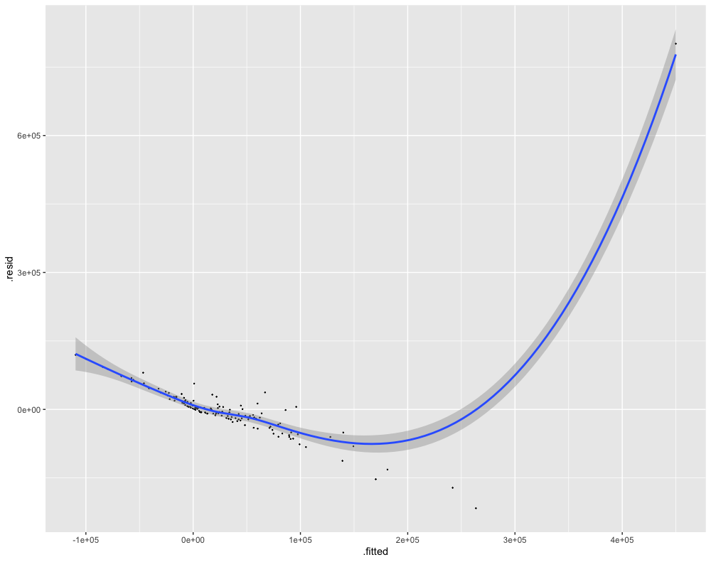
Again estimate the model and check the fit.
fit <- lm(pop19 ~ ntl + dst190 + dst200, data=lbr_adm2)
summary(fit)

Finally, add all of the variables to your regression model. Compare the results.
ggplot(lm(pop19 ~ water + dst011 + dst040 + dst130 + dst140 + dst150 + dst160 + dst190 + dst200 + topo + slope + ntl, data=lbr_adm2)) +
geom_point(aes(x=.fitted, y=.resid), size = .1) +
geom_smooth(aes(x=.fitted, y=.resid))
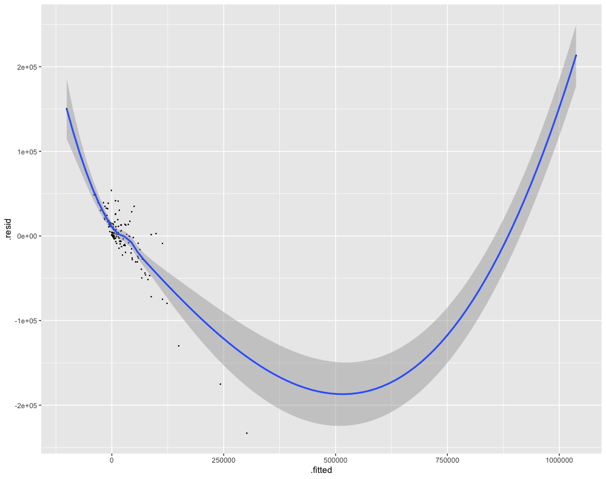
fit <- lm(pop19 ~ water + dst011 + dst040 + dst130 + dst140 + dst150 + dst160 + dst190 + dst200 + topo + slope + ntl, data=lbr_adm2)
summary(fit)
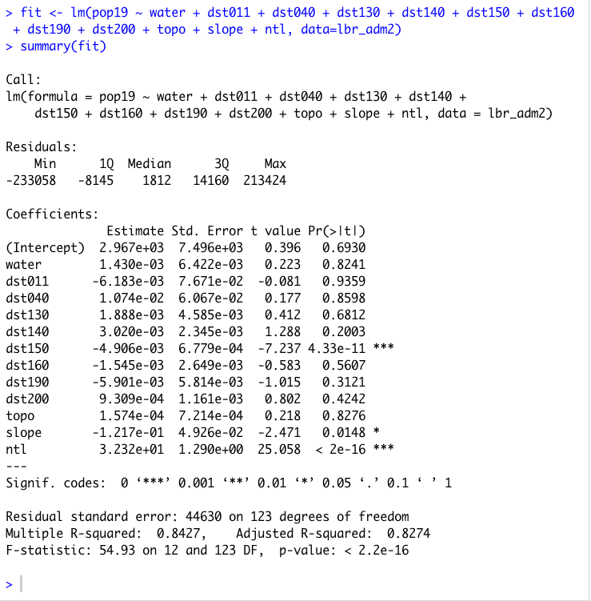
Team Challenge Question
Also use ggplot() to plot two linear models. Use the fit() and summary() commands to describe your models. Are you able to definitively identify coorelation between population and any of the other or combination of other land use and land cover geospatial covariates? How about density?
Meet with your group and prepare four different plots from at least three different countries (or team members) for the Friday informal group presentation. Then as a group, upload all 5 team members plots to #data100_igps (informal group presentations) by Sunday night. Each member should upload at least two combined histogram / density plots as well as two linear model plots.
Individual Stretch Goal 1
Manually recreate the ggplot() model of your regression from above. First identify the fitted.values as a variable in the model you named fit. Use the $ operator to identify the variable within the model object and return all of the values.
name_of_model$variable.with.fitted.values
Send this object$variable directly to the console and review the results. You should have the same number of fitted values as subdivisions within your adm2. Each individual fitted value is calculated by multiplying each variables' estimate (or coefficient) by the actual value for that observation (or row) and then summating the total of those products.
Likewise, manually calculate each individual model residual by subtracting all of the values for the dependent or response variable, pop19, from each cooresponding calculated, fitted value. The difference of these two outcomes are the model residuals.
your_adm2$pop19 - name_of_model$variable.with.fitted.values
Plot the two variables as a ggplot object. First create a data.frame using the cbind.data.frame() command. Name each of the new columns within your data frame accordingly.
model_data <- cbind.data.frame(fitted = name_of_model$variable.with.fitted.values, residuals = your_adm2$pop19 - name_of_model$variable.with.fitted.values)
Use ggplot() to plot your model.
ggplot(data = you_data_frame, aes(x = variable, y = variable)) +
geom_point(size = 0.25) +
geom_smooth(size = 0.5)

The three observations beneath the curve before it begins to rise seem to evidence the final contributions to the model before it transitions towards the observation for Monrovia. Add labels to these four points, by using the subset() command and creating a new object that you will use to annotate each of those four observations.
text <- subset(model_data, fitted > add_value_here)
Use this new object to plot the names of these four observations from the data.
ggplot(data = your_data, aes(x = variable, y = variable)) +
geom_point(size = 0.25) +
geom_smooth(size = 0.5) +
geom_text(data = your_data,
aes(x = variable,
y = variable,
label = name),
size = 2,
nudge_y = value)
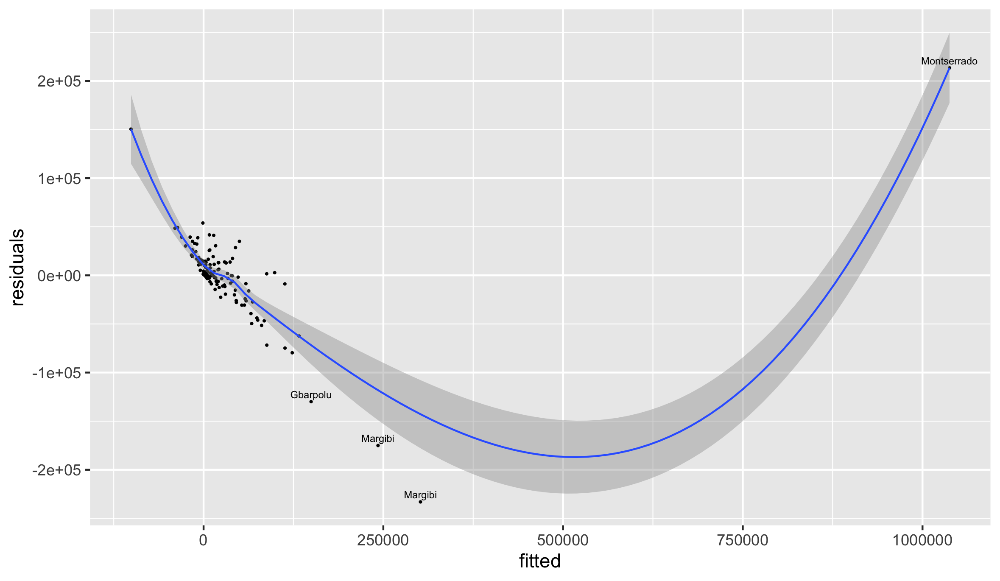
Likewise manually calculate residual standard error.
#How to calculate Residual Standard error (Like Standard Deviation)
k <- length(fit$coefficients)-1 #Subtract one to ignore intercept
SSE <- sum(fit$residuals^2)
n <- length(fit$residuals)
#Residual Standard Error
sqrt(SSE/(n-(1+k)))
Also, manually calculate multiple R^2.
#Multiple R-Squared (Coefficient of Determination)
SSyy <- sum((lbr_adm2$pop19 - mean(lbr_adm2$pop19))^2)
SSE <- sum(fit$residuals^2)
(SSyy-SSE)/SSyy
#Alternatively
1-SSE/SSyy
Calculate adjusted R^2.
#Adjusted R-Squared
n <- length(lbr_adm2$pop19)
k <- length(fit$coefficients)-1
SSE <- sum(fit$residuals^2)
SSyy = sum((lbr_adm2$pop19 - mean(lbr_adm2$pop19))^2)
1-(SSE/SSyy)*(n-1)/(n-(k+1))
Calculate the F-statistic.
#F-Statistic
((SSyy-SSE)/k) / (SSE/(n-(k+1)))
Finally, manually add the adjusted R^2 and F-statistic as labels to your plot.
ggplot(data = model_data, aes(x = fitted, y = residuals)) +
geom_point(size = 0.25) +
geom_smooth(size = 0.5) +
geom_text(data = text,
aes(x = fitted,
y = residuals,
label = adm1),
size = 2,
nudge_y = 7500) +
geom_text(aes(x = 500000,
y = 25000,
label = "Adjusted R-Squared")) +
geom_text(aes(x = 500000,
y = 0,
label = round(as.numeric(summary(fit)[9]), 4))) +
geom_text(aes(x = 500000,
y = -40000,
label = "F-statistic")) +
geom_text(aes(x = 500000,
y = -65000,
label = round(as.numeric(summary(fit)[[10]][1]), 4)))

Modeling & Predicting Spatial Values
In this lab, you will use the model parameters your previously estimated in order to predict spatial values across the landscape of your selected LMIC. To do this create a new script, install and load needed packages and libraries, and set your working directory. Once you have your script set up with sf:: , raster::, tidyverse::, doParallel::, and snow:: all in place, again load your RasterStack into your RStudio workspace. I named my 12 layer RasterStack that describes land use and land cover throughout Liberia, lulc, and just as before it displays the following summary characteristics.
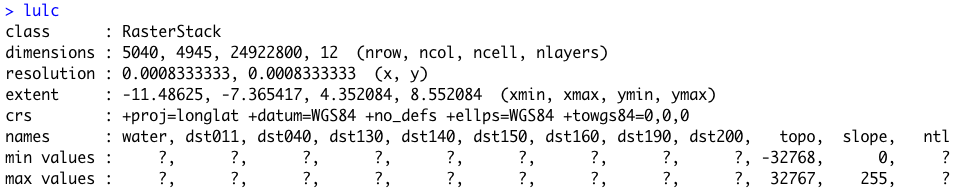
Also, load the adm0 (or international boundary), adm1 and adm2 for your LMIC. If you don't have your international boundary, go back to GADM, HDX or also look on Geoboundaries for the shapefile in order to import to your RStudio work session.
{% embed url="https://www.gadm.org" caption="Link to GADM" %}
{% embed url="https://data.humdata.org" caption="Link to HDX" %}
{% embed url="http://www.geoboundaries.org/data/1_3_3/zip/shapefile/" caption="Geoboundaries subdirectory with shapefiles by ISO code" %}
For this exercise, I will retrieve my international border shapefile from the Geoboundaries subdirectory and then use the read_sf() command to import the data as an object I named lbr_int.
You will also need the WorldPop raster later in the exercise in order to calculate a basic estimate of spatial error. To improve upon the predictive capability of the model, I have gone back and retrieved the 2015 WorldPop raster file of persons per pixel (ppp) for Liberia, rather than the 2019 population counts we previously used. It is probably not going to have a huge impact, but if you want to try for the best results, the date value of your response variable should be the same as the date value of your geospatial covariates.
lbr_pop15 <- raster("lbr_ppp_2015.tif")
You may have noticed when reviewing the characteristics of your RasterStack that many of the layers had ? as the value for both the min values and max values. The reason this occurred is because each of the layers within the raster is presenting values outside of the boundaries of our LMIC. For example, with Liberia, you will notice that there is a large portion of the area within the plot but outside of the national border that has some assigned value (likely NA). These values are not part of our analytical area and should be omitted. In order to fix this problem, we need to use the mask() command to remove all of the gridcells that are not explicitly within the international border of our LMIC.
yourRasterStack <- add_command_here(yourRasterStack, yourLMIC_intlborder)
It might take a few minutes to run the mask() command. On a MBAir using the mask() command on a 12 layer RasterStack (each layer having about 25 million gridcells) it takes about 10 minutes. Once the command is completed, you should now notice min values and max values when retrieving a summary of what has now been transformed from a RasterStack to a RasterBrick.
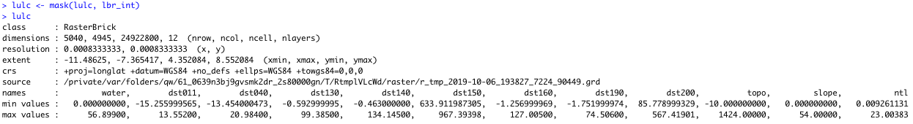
As in the previous exercise, estimate your linear model using the pop15 variable as your response (dependent variable) and all of the covariates from your adm2 sf object as the predictors (independent variables).
model <- add_command_here(depvar ~ ind1 + ... + indN, data=your_adm2_sf)
Once you have estimated your model, use the summary() command to review a summary of its characteristics.
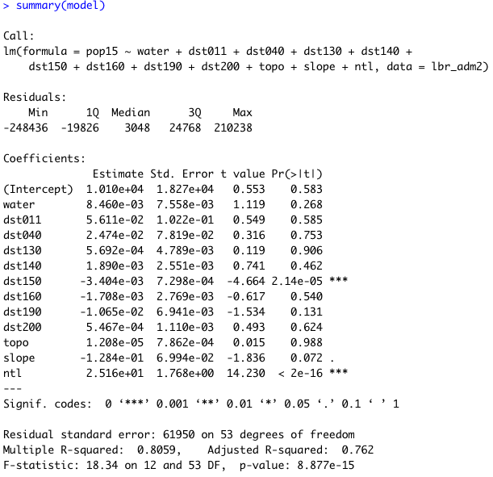
Confirm that each variable in your lulc object has a corresponding variable in the linear model you just estimated. You will use these estimates with the 12 different geospatial coverariate layers within your RasterBrick to predict the population at each gridcell across your LMIC. Use the predict() function from the raster:: package with your lulc object as well as your model to predict the population value of every gridcell within the borders of your LMIC.
predicted_values <- library::function(RasterBrick, your_model, progress="window")
Adding the progress="window" argument at the end of the command should force a progress window to appear on main desktop that informs you of how many steps are needed to completely execute the command as well as how many have been completed. The progress="window" argument is purely optional.
The resulting object predicted_values should be a single RasterLayer with the same number of gridcells as each layer within your RasterBrick. Type the name of the RasterLayer into the console to review its summary output, while also noting the minimum and maximum values across all gridcells.
Use the cellStats(predicted_values, sum) command to calculate the sum of all the values in every gridcell throughout your newly created RasterLayer. With the model estimated for Liberia, the sum total of all predicted values is 113413402375(113 billion). Compared with the output from sum(your_adm2$pop15) (which is 4039128for Liberia) your will very likely that your model has massively overestimated population values (in this case by an order of about 28,000 times).
While these predicted values are no where near the real population count at each gridcell, they do nonetheless provide a spatial description of the proportion of persons as distributed across the landscape of your LMIC. In fact, if we execute some basic raster algebra and subtract the minimium value from my predicted_values RasterLayer and then sum the values of all gridcells, we will find that while the total population predicted is still very likely a gross overestimation, it is getting closer to our best estimate of the real value (in the case of Liberia, now an order of 15 times pop15).
base <- predicted_values - minValue(predicted_values)
cellStats(base, sum)
We will proceed with the RasterLayer by using the extract()command to assign the ID from each adm2 object to each gridcell containing a predicted value from our linear model using the lulc geospatial covariates as indenpendent variables. To effectively use the extract() command, set ncores object to one less than your total and then also execute the beginCluster() command as you have done in previous exercises. In this case, since it is only one layer, the extract command should take less time to execute (about 10 to 15 minutes on an MBAir).
ncores <- detectCores() - 1
beginCluster(ncores)
pred_vals_adm2 <- raster::extract(your_pred_vals_raster, your_adm2, df=TRUE)
endCluster()
Once you have assigned the ID to each gridcell according to its adm2 location, aggregate the values. This time we will use a slightly different command to sum the values by adm2 unit, although either way could work. Also, bind this new column to your adm2 sf object.
pred_ttls_adm2 <- aggregate(. ~ ID, pred_vals_adm2, sum)
lbr_adm2 <- bind_cols(lbr_adm2, pred_ttls_adm2)
Your sf object now has a new column named layer that has the sum of all predicted values for each adm2 subdivision of the LMIC. Assign the value for layer to each gridcell according to its adm2 subdivision. Use the rasterize() command with your adm2 object and your predicted_values raster in order to create a new raster that has the predicted totals of every adm2 assigned to each gridcell according to its location. The raster object used in the argument (in this case predicted_values) is the base template for the new raster produced as a result of the command.
new_raster <- command(adm2, template_raster, field = "layer")
Create a new raster that represents each gridcells proportion of the total within its adm2 subdivision.
another_new_raster <- raster_1 / raster_2
Again use the rasterize() command to assign a value to every gridcell according to its adm2 location, but this time use the pop15 variable.
yet_another_new_raster <- command(adm2, template_raster, field = "pop15")
Distribute the adm2 populatoin totals across each gridcell according to its fractional proportion of summed predicted population (also at adm2), multiply the proportion by the totals.
population <- gridcell_proportions * population_adm2
Confirm your results by evaluating the totals.
cellStats(population, sum)
[1] 4039128
R should return the same total previously used when you calcualte sum(your_adm2$pop15).

Investigate Margins of Error
Our model is serving to allocate population totals across all gridcells, but how accurate is it? To start we can calculate the different of our predicted values - the worldpop values and sum the totals.
diff <- population - lbr_pop15
In order to establish a basis for comparing total error across your LMIC take the absolute value of the differences and sum them to arrive a term that represnts total error.
cellStats(abs(diff), sum)
Taking the hist(diff) will also inform you of the magnitude and direction of error in your predicted values. Use the plot(diff) command to have a look at the resulting raster.

By looking at the histogram and the above difference of predicted value from worldpop raster it appears that most of the error is slightly above or below 0, and is also distributed fairly evenly across the entire space. Looking closely though, the area close to the southwest coast appears to exhibit a different phenomenon. This is the capital of Liberia, Monrovia. For your investigation, select the primary urban area and conduct the same analysis as follows.
First subset your adm2 by using the name of the administrative subdivision.
new_name <- your_adm2 %>%
filter(name_var == "Add Name Here")
Use the mask() command with this newly created sf object to focus your analysis on the primate city within your LMIC.
urban_diff <- mask(diff, urban_adm2)
urban_pop <- mask(population, urban_adm2)
Create an object the defines the boundaries of your identified urban area. The bounding box used in your crop() command should be defined according the following order.
c(western_most_longitude, eastern_most_longitude, southern_most_latitude, northern_most_latitude)
Following is the bounding box and crop() command used for Monrovia, Liberia.
extGMN <- c(-10.83, -10.64, 6.20, 6.42)
gmonrovia_diff <- crop(gmonrovia_diff, extGMN)
gmonrovia_pop <- crop(gmonrovia_pop, extGMN)
Plot your Monrovia rasters.


Finally, plot a three dimension map of the values, to gauge exactly how much variation was exhibited in the predicted values. Install and load the rgl:: and rasterVis:: libraries in order to execute the following command.
rasterVis::plot3D(gmonrovia_pop)
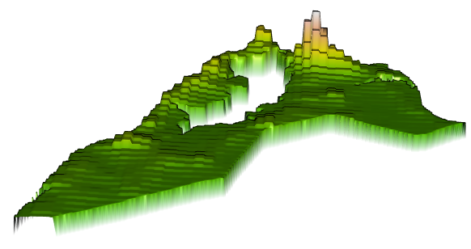
Finally, add the tmap:: library and overlay your differences plot.
mapview::mapview(gmonrovia_diff, alpha = .5)
Do you identify a geospatial trend associated with the error resulting from your predicted values?

Team Challenge Question
Follow the steps from above used to produce the plots describing Liberia, but instead each team member should use their own selected LMIC country. Investigate the results from your model at different scales and locations across your selected LMIC. How effective was your model? Do you identify any trends? Produce a variety of plots that investigate, describe and analyze your dasymmetric population allocation using a linear model with land use and land cover geospatial covariates. Investigate at least two different locations and two different scales. Use adm1, adm2 or adm3 units of analysis, either in combination or alone to define the boundaries of your analysis.
Meet with your group and prepare to present three different plots from at least three different countries (or team members) for the Friday informal group presentation. You are welcome to combine output from the previous Project 2 exercise (part 1) as you wish. Then as a group, upload all 5 team members plots to #data100_igps (informal group presentations) by Sunday night. Each member should upload at least four plots that describe at least two different locations of differing scales within your LMIC.
Investigating and Comparing Results
Load all of your covariates, import your adm0 (international boundary) to crop() and mask() your RasterBrick and then use writeRaster() to save it. Later, use the brick() function to import your RasterBrick to your RStudio work session as needed. Make sure the layers in your RasterBrick are named after using the brick() command. Use the names() command to name your layers.
f <- list.files(pattern="lbr_esaccilc_dst", recursive=TRUE)
lulc <- stack(lapply(f, function(i) raster(i, band=1)))
nms <- sub("_100m_2015.tif", "", sub("lbr_esaccilc_", "", f))
names(lulc) <- nms
topo <- raster("lbr_srtm_topo_100m.tif")
slope <- raster("lbr_srtm_slope_100m.tif")
ntl <- raster("lbr_viirs_100m_2015.tif")
lulc <- addLayer(lulc, topo, slope, ntl)
names(lulc)[c(1,10:12)] <- c("water","topo","slope", "ntl")
lbr_adm0 <- read_sf("gadm36_LBR_0.shp")
lulc <- crop(lulc, lbr_adm0)
lulc <- mask(lulc, lbr_adm0)
writeRaster(lulc, filename = "lulc.tif", overwrite = TRUE)
# lulc <- stack("lulc.tif")
lulc <- brick("lulc.tif")
names(lulc) <- c("water", "dst011" , "dst040", "dst130", "dst140", "dst150",
"dst160", "dst190", "dst200", "topo", "slope", "ntl")
Obtain the 2015 WorldPop persons per pixel file for your LMIC. Make sure your adm sf object has the total population per subdivision as well as its area and density. Summarize all twelve geospatial covariates in adm groups by sum and by mean. Modify the following code to create your adm2 or adm3 object (you only have to select one, in the following example I have selected adm3 for Liberia).
lbr_pop15 <- raster("lbr_ppp_2015.tif")
# lbr_adm1 <- read_sf("gadm36_LBR_1.shp")
# lbr_adm2 <- read_sf("gadm36_LBR_2.shp")
lbr_adm3 <- read_sf("gadm36_LBR_3.shp")
# ncores <- detectCores() - 1
# beginCluster(ncores)
# pop_vals_adm1 <- raster::extract(lbr_pop15, lbr_adm1, df = TRUE)
# pop_vals_adm2 <- raster::extract(lbr_pop15, lbr_adm2, df = TRUE)
# pop_vals_adm3 <- raster::extract(lbr_pop15, lbr_adm3, df = TRUE)
# endCluster()
# save(pop_vals_adm1, pop_vals_adm2, pop_vals_adm3, file = "lbr_pop_vals.RData")
load("lbr_pop_vals.RData")
# totals_adm1 <- pop_vals_adm1 %>%
# group_by(ID) %>%
# summarize(pop15 = sum(lbr_ppp_2015, na.rm = TRUE))
#
# lbr_adm1 <- lbr_adm1 %>%
# add_column(pop15 = totals_adm1$pop15)
#
# lbr_adm1 <- lbr_adm1 %>%
# mutate(area = st_area(lbr_adm1) %>%
# set_units(km^2)) %>%
# mutate(density = pop15 / area)
# totals_adm2 <- pop_vals_adm2 %>%
# group_by(ID) %>%
# summarize(pop15 = sum(lbr_ppp_2015, na.rm = TRUE))
#
# lbr_adm2 <- lbr_adm2 %>%
# add_column(pop15 = totals_adm2$pop15)
#
# lbr_adm2 <- lbr_adm2 %>%
# mutate(area = st_area(lbr_adm2) %>%
# set_units(km^2)) %>%
# mutate(density = pop15 / area)
totals_adm3 <- pop_vals_adm3 %>%
group_by(ID) %>%
summarize(pop15 = sum(lbr_ppp_2015, na.rm = TRUE))
lbr_adm3 <- lbr_adm3 %>%
add_column(pop15 = totals_adm3$pop15)
lbr_adm3 <- lbr_adm3 %>%
mutate(area = st_area(lbr_adm3) %>%
set_units(km^2)) %>%
mutate(density = pop15 / area)
#save(lbr_adm1, lbr_adm2, lbr_adm3, file = "lbr_adms.RData")
# lulc <- brick("lulc.tif")
# names(lulc) <- c("water", "dst011" , "dst040", "dst130", "dst140", "dst150",
# "dst160", "dst190", "dst200", "topo", "slope", "ntl")
# ncores <- detectCores() - 1
# beginCluster(ncores)
# lulc_vals_adm1 <- raster::extract(lulc, lbr_adm1, df = TRUE)
# lulc_vals_adm2 <- raster::extract(lulc, lbr_adm2, df = TRUE)
# lulc_vals_adm3 <- raster::extract(lulc, lbr_adm3, df = TRUE)
# endCluster()
# save(lulc_vals_adm1, lulc_vals_adm2, lulc_vals_adm3, file = "lulc_vals_adms.RData")
load("lulc_vals_adms.RData")
# lulc_ttls_adm1 <- lulc_vals_adm1 %>%
# group_by(ID) %>%
# summarize_all(sum, na.rm = TRUE)
# lulc_ttls_adm2 <- lulc_vals_adm2 %>%
# group_by(ID) %>%
# summarize_all(sum, na.rm = TRUE)
lulc_ttls_adm3 <- lulc_vals_adm3 %>%
group_by(ID) %>%
summarize_all(sum, na.rm = TRUE)
lulc_means_adm3 <- lulc_vals_adm3 %>%
group_by(ID) %>%
summarize_all(mean, na.rm = TRUE)
# lbr_adm1 <- bind_cols(lbr_adm1, lulc_ttls_adm1)
# lbr_adm2 <- bind_cols(lbr_adm2, lulc_ttls_adm2)
lbr_adm3 <- bind_cols(lbr_adm3, lulc_ttls_adm3, lulc_means_adm3)
save(lbr_adm3, file = "lbr_adm3.RData")
Load your geospatial covariate RasterBrick of land use and land cover lulc, your 2015 WorldPop raster and your adm sf object. View your adm sf object and notice that you now have two summary sets of columns that describe each of your twelve geospatial covariates. The first set of columns describes the sum of all values per adm while the second set describes the mean of all values per adm. Also notice that in the second set, each variable has had the number 1 added to its name to differentiate it from the first series.
Use the lm() function to estimate three models. First use pop15 as the response variable and the sum of each geospatial covariate per adm as the predictors. Second, again use pop15 as the response variable but this time instead use the mean of each geospatial covariate per adm as the predictors. Third, use the logarithm of 2015 population log(pop15) as the response and the mean of each geospatial covariate per adm as the predictors. Notice I created a new variable named logpop15 but you could just as easily have specified log(pop15) within the call of your model.
model.sums <- lm(pop15 ~ water + dst011 + dst040 + dst130 + dst140 + dst150 + dst160 + dst190 + dst200 + topo + slope + ntl, data=lbr_adm3)
model.means <- lm(pop15 ~ water1 + dst0111 + dst0401 + dst1301 + dst1401 + dst1501 + dst1601 + dst1901 + dst2001 + topo1 + slope1 + ntl1, data=lbr_adm3)
lbr_adm3$logpop15 <- log(lbr_adm3$pop15)
model.logpop15 <- lm(logpop15 ~ water1 + dst0111 + dst0401 + dst1301 + dst1401 + dst1501 + dst1601 + dst1901 + dst2001 + topo1 + slope1 + ntl1, data=lbr_adm3)
Check the summary output from each model.
summary(model.sums)
summary(model.means)
summary(model.logpop15)
Make sure the names of each layer in your RasterBrick matches the names of the independent variables in each of your models. Notice how the second two models use the mean of each geospatial covarariate and the layer names are modified accordingly to match.
names(lulc) <- c("water", "dst011" , "dst040", "dst130", "dst140", "dst150", "dst160", "dst190", "dst200", "topo", "slope", "ntl")
lulc1 <- lulc
names(lulc1) <- c("water1", "dst0111" , "dst0401", "dst1301", "dst1401", "dst1501", "dst1601", "dst1901", "dst2001", "topo1", "slope1", "ntl1")
Use the predict() function from the raster:: package with the appropriate RasterBrick and model to predict each gridcells value. Use the save() and then the load() command in order to reduce computation time after restarting your work session.
predicted_values_sums <- raster::predict(lulc, model.sums)
predicted_values_means <- raster::predict(lulc1, model.means)
predicted_values_logpop15 <- raster::predict(lulc1, model.logpop15)
#save(predicted_values_sums, predicted_values_means, predicted_values_logpop15, file = "predicted_values.RData")
Use the extract() function from the raster:: package to assign the adm ID to each gridcell. Again use the save() and load() commands to reduce computation time.
ncores <- detectCores() - 1
beginCluster(ncores)
pred_vals_adm3_sums <- raster::extract(predicted_values_sums, lbr_adm3, df=TRUE)
pred_vals_adm3_means <- raster::extract(predicted_values_means, lbr_adm3, df=TRUE)
pred_vals_adm3_logpop15 <- raster::extract(predicted_values_logpop15, lbr_adm3, df=TRUE)
endCluster()
#save(pred_vals_adm3_sums, pred_vals_adm3_means, pred_vals_adm3_logpop15, file = "predicted_values_adm3s.RData")
Aggregate all values.
pred_ttls_adm3_sums <- aggregate(. ~ ID, pred_vals_adm3_sums, sum)
pred_ttls_adm3_means <- aggregate(. ~ ID, pred_vals_adm3_means, sum)
pred_ttls_adm3_logpop15 <- aggregate(. ~ ID, pred_vals_adm3_logpop15, sum)
Create a new data frame that contains the aggregate sums from each model's predictions.
ttls <- cbind.data.frame(preds_sums = pred_ttls_adm3_sums$layer,
preds_means = pred_ttls_adm3_means$layer,
resp_logpop = pred_ttls_adm3_logpop15$layer)
Bind the new values as columns within your adm. Notice I assigned a name to each column.
lbr_adm3 <- bind_cols(lbr_adm3, ttls)
Use the rasterize() command to create a new RasterLayer containing the predicted values from each of your models. The second object in your rasterize() command is the raster that is used as the template to produce the new raster. The values of the template raster are not used in the calculation, instead the values in the column of your adm sf object that identify the sum of predicted values from your model is used.
predicted_totals_sums <- rasterize(lbr_adm3, predicted_values_sums, field = "preds_sums")
predicted_totals_means <- rasterize(lbr_adm3, predicted_values_sums, field = "preds_means")
predicted_totals_logpop <- rasterize(lbr_adm3, predicted_values_sums, field = "resp_logpop")
Calculate the gridcell proportions for each result.
gridcell_proportions_sums <- predicted_values_sums / predicted_totals_sums
gridcell_proportions_means <- predicted_values_means / predicted_totals_means
gridcell_proportions_logpop <- predicted_values_logpop15 / predicted_totals_logpop
Check the cellStats() to confirm that the sum of each objects proportions is equal to the number of adms in your sf object.
cellStats(gridcell_proportions_sums, sum)
cellStats(gridcell_proportions_means, sum)
cellStats(gridcell_proportions_logpop, sum)
Produce a raster object that contains the WorldPop values we will use as our comparison spatial data set for validation.
population_adm3 <- rasterize(lbr_adm3, predicted_values_sums, field = "pop15")
Calculate the final predicted value for each gridcell according to the output from each of the three models.
population_sums <- gridcell_proportions_sums * population_adm3
population_means <- gridcell_proportions_means * population_adm3
population_logpop <- gridcell_proportions_logpop * population_adm3
Check cellStats() to verify that total population matches the initial value used in this dasymmetric allocation.
cellStats(population_sums, sum)
cellStats(population_means, sum)
cellStats(population_logpop, sum)
sum(lbr_adm3$pop15)
Calculate the difference between each RasterLayer and the WorldPop RasterLayer.
diff_sums <- population_sums - lbr_pop15
diff_means <- population_means - lbr_pop15
diff_logpop <- population_logpop - lbr_pop15
Finally, produce a raster plot of each model's predicted output as well as the differences and a 3D plot to visualize the results.
plot(population_sums)
plot(diff_sums)
rasterVis::plot3D(diff_sums)
cellStats(abs(diff_sums), sum)
plot(population_means)
plot(diff_means)
rasterVis::plot3D(diff_means)
cellStats(abs(diff_means), sum)
plot(population_logpop)
plot(diff_logpop)
rasterVis::plot3D(diff_logpop)
cellStats(abs(diff_logpop), sum)
plot(lbr_pop15)
rgl.snapshot("diff", fmt = "png", top = TRUE )

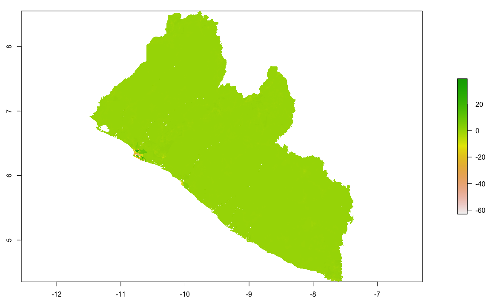
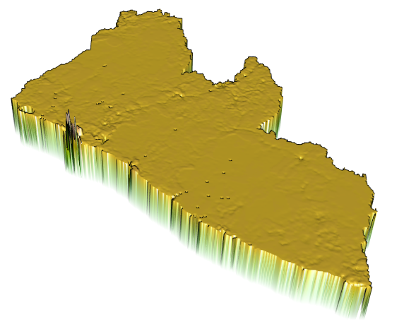
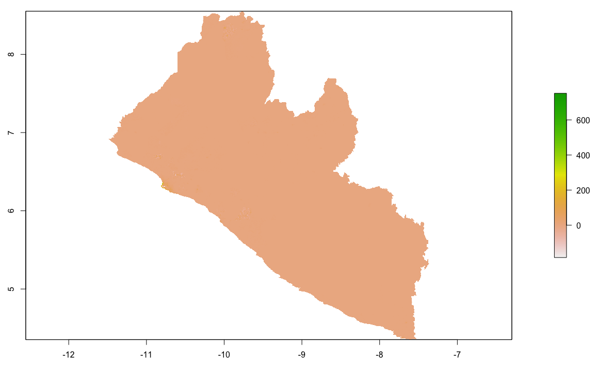
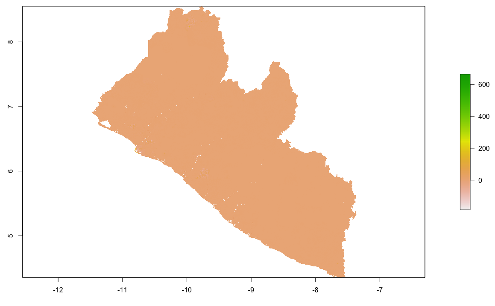
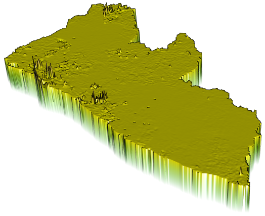
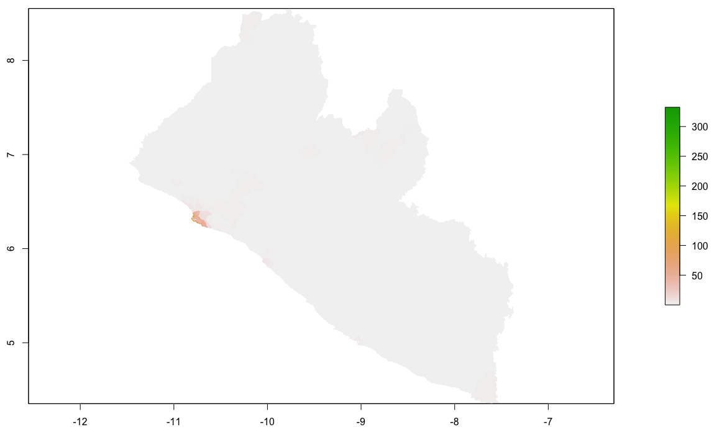
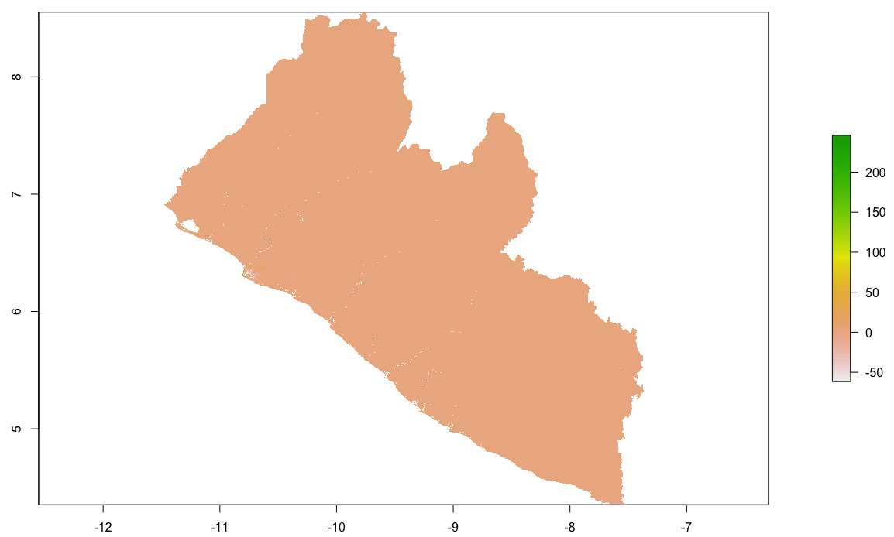
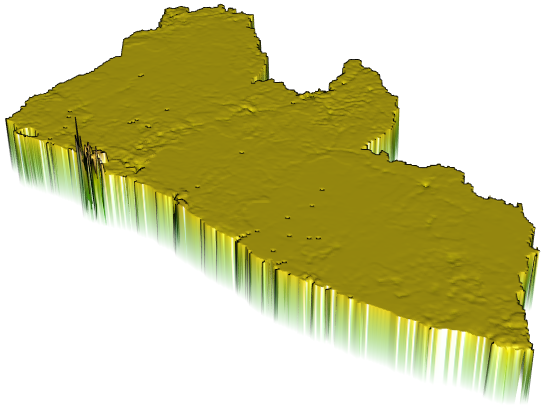
Project 2. Individual Deliverable
Upload three sets of spatial plots that describe the predicted population of your selected LMIC using each of the three models.
- Response variable is population and the predictors are sum of covariates
- Response variable is population and the predictors are mean of covariates
- Reponse variable is log of population and the predictors are mean of covariates
Each of the three sets of plots should also have three plots.
- A plot that describes the predicted population of your LMIC using the model
- A plot that describes the difference between your predicted results and the WorldPop estimates for 2015
- A three dimension plot that visualizes the population or difference
Accompany your series of plots with a written statement that identifies which of the three models produced the best results. Justify your assessment.
Upload your deliverable to the slack channel #data100_project2 no later than 11:59PM on Sunday, October 20th.
Individual Stretch Goal 1
Conduct the same analysis as above at an increased scale, analyzing one of your LMIC's largest or most significant urban areas or cities. Subset your adm using the %>% operator and the | as needed.
mts_bomi <- lbr_adm3 %>%
filter(NAME_1 == "Montserrado" | NAME_1 == "Bomi")
Use the mapview() command to identify trends and provide further support for your assessment of each model as you did in the previous execise.
mapview::mapview(gmonrovia_diff, alpha = .5)
Again compare the results. Are you able to identify any trends?
Individual Stretch Goal 2
Estimate a random forest model using the same data you previously used. Use the mean values of all grid cells within each adm as the predictors (independent variable) and the log of population as the response (dependent variable). Start by loading the World Pop raster you will use to validate your resuts against first. Then load your adm0 to use in your crop() and mask() commands. Load your adm3 that has all of your variables needed to estimate your random forest model. Also be sure to load the land use and land cover variables you will use to predict the population of each individual grid cell.
rm(list=ls(all=TRUE))
# install.packages("raster", dependencies = TRUE)
# install.packages("sf", dependencies = TRUE)
# install.packages("tidyverse", dependencies = TRUE)
# install.packages("doParallel", dependencies = TRUE)
# install.packages("snow", dependencies = TRUE)
# install.packages("randomForest", dependencies = TRUE)
#library(sp)
library(sf)
library(raster)
library(tidyverse)
library(doParallel)
library(snow)
library(randomForest)
### Import Administrative Boundaries ###
setwd("~/Tresors/teaching/project_folder/data/")
lbr_pop15 <- raster("lbr_ppp_2015.tif")
lbr_adm0 <- read_sf("gadm36_LBR_0.shp")
load("lbr_adm3.RData")
lulc <- brick("lulc.tif")
lulc <- crop(lulc, lbr_adm0)
lulc <- mask(lulc, lbr_adm0)
Simplify your adm3 by extracting only the needed columns. Remove the geometry from the object by using the st_geometry() command and assigning it as NULL. Add the log of population as a variable to your newly created data set. Simply the class of your data set by rewriting it as a data.frame.
model_data <- lbr_adm3[ ,c(18:20, 35:46)]
st_geometry(model_data) <- NULL
model_data$logpop15 <- as.numeric(log(model_data$pop15))
model_data <- as.data.frame(model_data)
Your object model_data should have the following structure.
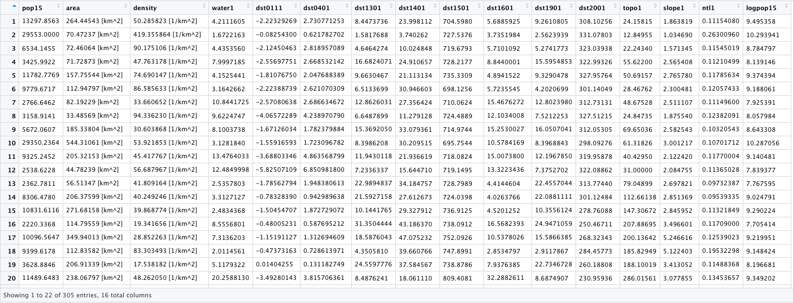
Simplify the objects you will use as the predictors and response by creating two new objects. The x_data object are your predictors and coorespond to the mean values of each lulc variable at each adm. The y_data is your response variable, in this case log of population.
x_data <- model_data[ ,4:15]
y_data <- model_data[ ,16]
First, tune your random forest model in order to determine which of the variables are important. The ntreeTry = argument specifies how many trees the model will estimate at the tuning step. The mtryStart = argument specifies how many variables will be tried at each split. Other arguments are also important, but you can simply follow the following chunk of code to start.
init_fit <- tuneRF(x = x_data,
y = y_data,
plot = TRUE,
mtryStart = length(x_data)/3,
ntreeTry = length(y_data)/20,
imrpove = 0.0001,
stepFactor = 1.20,
trace = TRUE,
doBest = TRUE,
nodesize = length(y_data)/1000,
na.action = na.omit,
importance = TRUE,
proximity = TRUE,
sampsize = min(c(length(y_data), 1000)),
replace = TRUE)
After you get a result from your tuning step, check the importance scores from your model. Use importance(init_fit) to have RStudio return measures for each variable. Assign those scores to a vector and then subset using subscripting operators all variables that have a positive value. Retain only those variables that have a positive importance score.
importance_scores <- importance(init_fit)
pos_importance <- rownames(importance_scores)[importance_scores[ ,1] > 0]
pos_importance
x_data <- x_data[pos_importance]
After respecifying your random forest model, estimate it again.
pop_fit <- tuneRF(x = x_data,
y = y_data,
plot = TRUE,
mtryStart = length(x_data)/3,
ntreeTry = length(y_data)/20,
imrpove = 0.0001,
stepFactor = 1.20,
trace = TRUE,
doBest = TRUE,
nodesize = length(y_data)/1000,
na.action = na.omit,
importance = TRUE,
proximity = TRUE,
sampsize = min(c(length(y_data), 1000)),
replace = TRUE)
Finally, use several of the parameters from pop_fit in the arguments of your final model.
model <- randomForest(x = x_data,
y = y_data,
mtry=pop_fit$mtry,
ntree = pop_fit$ntree,
nodesize = length(y_data)/1000,
importance = TRUE,
proximity = TRUE,
do.trace = FALSE)
Check the output from your model.
print(model)
plot(model)
varImpPlot(model)

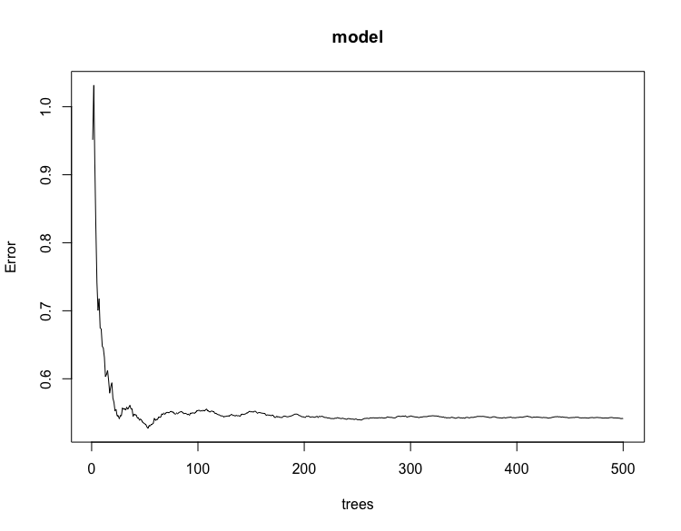
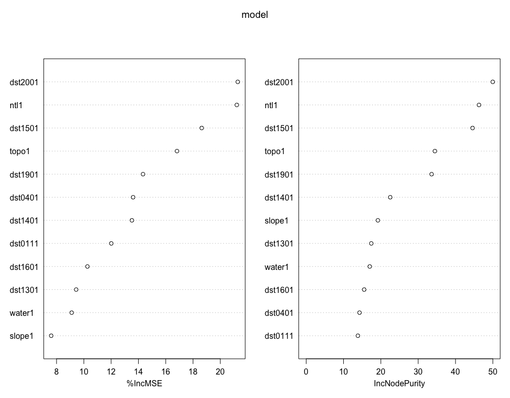
Confirm that the names in your random forest model match those found in your rasterBrick.
names(lulc) <- c("water1", "dst0111" , "dst0401", "dst1301", "dst1401", "dst1501", "dst1601", "dst1901", "dst2001", "topo1", "slope1", "ntl1")
Now predict your population values using the model with the 12 different geospatial covariate layers.
preds_rf <- raster::predict(lulc, model)
After you have predicted your population values for each gridcell, back transform the log of population to its original estimate.
preds_rf_exp <- exp(preds_rf)
Next, extract all of the predicted values by assigning the ID for each adm unit where it is located.
ncores <- detectCores() - 1
beginCluster(ncores)
preds_ttls_rf <- raster::extract(preds_rf_exp, lbr_adm3, df=TRUE)
endCluster()
Aggregate all of the values by adm ID and sum.
preds_area_totals_rf <- aggregate(. ~ ID, preds_ttls_rf, sum)
Bind the columns.
lbr_adm3 <- bind_cols(lbr_adm3, preds_area_totals_rf)
Finally, rasterize() the value of the total estimates per adm and then calculate the gridcell proportionate share across the entire LMIC. Confirm that cellStats() returns a value equal to the number of adms in your LMIC.
preds_ttls <- rasterize(lbr_adm3, preds_rf, field = "layer")
props <- preds_rf_exp / preds_ttls
cellStats(props, sum)
Again, rasterize() population values and then multiply the gridcell proportions by the population values to estimate each gridcells proportion of the total population per gridcell.
pops <- rasterize(lbr_adm3, preds_rf, field = "pop15")
gridcell_pops <- props * pops
cellStats(gridcell_pops, sum)
Check cellStats() to confirm your totals match population values calculated from the WorldPop persons per pixel raster layer.
Finally, subtract the raster layer with predicted values from your random forest model from the WorldPop ppp raster layer. Calculate the sum of absolute value of differences between the two rasters.
diff <- gridcell_pops - lbr_pop15
cellStats(abs(diff), sum)
rasterVis::plot3D(gridcell_pops)
rasterVis::plot3D(diff)
What can you surmise? Have you improved your predictive power by applying a machine learning approach?